<!doctype html>
<html lang="en">
<head>
  <meta charset="utf-8">
  <meta name="viewport" content="width=device-width, initial-scale=1">
  <title>arxiv digest — 2026-07-15</title>
  <style>
:root {
  --bg: #ffffff;
  --fg: #1f2328;
  --muted: #59636e;
  --border: #d0d7de;
  --card: #f6f8fa;
  --link: #0969da;
}
body {
  max-width: 980px;
  margin: 0 auto;
  padding: 2rem 1rem 5rem;
  font-family: -apple-system, BlinkMacSystemFont, "Segoe UI", Helvetica, Arial, sans-serif;
  line-height: 1.55;
  color: var(--fg);
  background: var(--bg);
}
a { color: var(--link); }
img { max-width: 100%; height: auto; }
pre, code { background: var(--card); border-radius: 6px; }
pre { padding: 1rem; overflow-x: auto; }
blockquote { border-left: 4px solid var(--border); padding-left: 1rem; color: var(--muted); }
details { margin: 0.6rem 0; }
summary { cursor: pointer; font-weight: 600; }
.paper-figures-scroll {
  display: flex;
  gap: 1rem;
  overflow-x: auto;
  overscroll-behavior-x: contain;
  padding: 0.75rem 0.25rem 1rem;
  margin: 1rem 0 1.25rem;
  border-top: 1px solid var(--border);
  border-bottom: 1px solid var(--border);
  scroll-snap-type: x proximity;
}
.paper-figure-card {
  flex: 0 0 min(260px, 72vw);
  scroll-snap-align: start;
  background: var(--card);
  border: 1px solid var(--border);
  border-radius: 12px;
  padding: 0.55rem;
}
.paper-figure-card img {
  display: block;
  width: 100%;
  max-height: 240px;
  object-fit: contain;
  background: white;
  border-radius: 8px;
}
.paper-figure-caption {
  display: block;
  margin-top: 0.5rem;
  color: var(--muted);
  font-size: 0.85rem;
}
.figure-strip-hint {
  color: var(--muted);
  font-size: 0.9rem;
  margin-bottom: -0.3rem;
}
</style>
  <!-- MathJax: renders $...$ inline math and $$...$$ display math, plus
       \(...\) and \[...\]. Loaded from the official CDN; works offline
       once cached. Configured to skip code/pre blocks so arxiv IDs that
       look like dollar amounts don't get mangled. -->
  <script>
    window.MathJax = {
      tex: {
        inlineMath: [['$', '$'], ['\\(', '\\)']],
        displayMath: [['$$', '$$'], ['\\[', '\\]']],
        processEscapes: true,
        processEnvironments: true
      },
      options: {
        skipHtmlTags: ['script', 'noscript', 'style', 'textarea', 'pre', 'code'],
        ignoreHtmlClass: 'tex2jax_ignore',
        processHtmlClass: 'tex2jax_process'
      }
    };
  </script>
  <script id="MathJax-script" async
    src="https://cdn.jsdelivr.net/npm/mathjax@3/es5/tex-chtml.js"></script>
</head>
<body>
<header style="background-color: #333; color: white; padding: 15px; margin-bottom: 20px;">
  <h1 style="margin: 0; font-size: 24px;">
    <a href="https://ochelpan.github.io/arXiv_clean/" style="color: white; text-decoration: none;">Main</a>
  </h1>
</header>

<h1>Daily arXiv Report</h1>

<hr>
<p>
<a href="index.html">← Index</a>
 · <a href="papers_03.html">← Previous</a> · <a href="papers_05.html">Next →</a>
</p>
<hr>

<h2>Papers 61–80</h2>
<p><a id="paper-2607.11000"></a></p>
<h3 id="non-abelian-holonomic-transformations-in-digitally-coupled-acoustic-waveguides-guided-by-the-global-adiabatic-criterion"><a href="http://arxiv.org/abs/2607.11000v1">Non-Abelian holonomic transformations in digitally coupled acoustic waveguides guided by the global adiabatic criterion</a></h3>
<p><strong>Authors:</strong> Jin-Kang Guo, Jia Li, Jin-Lei Wu, Chuan-Cun Shu<br>
<strong>Type:</strong> theory · <strong>Category:</strong> other · <strong>PDF:</strong> <a href="https://arxiv.org/pdf/2607.11000v1">https://arxiv.org/pdf/2607.11000v1</a><br>
<strong>Analysis basis:</strong> full PDF text, analyzed in chunks
<strong>Topic relevance:</strong> <code>analog quantum simulation</code> <strong>3/5</strong> · <code>methods for driven-dissipative</code> <strong>3/5</strong> · <code>correlated / nonlocal dissipation</code> <strong>2/5</strong> · <code>driven-dissipative phase transition</code> <strong>2/5</strong> · <code>non-equilibrium dynamics</code> <strong>2/5</strong> · <code>Keldysh / 2PI / non-Gaussian methods</code> <strong>1/5</strong> · <code>Kondo &amp; dissipative impurity</code> <strong>1/5</strong> · <code>entanglement &amp; information structure</code> <strong>1/5</strong> · <code>non-equilibrium universality</code> <strong>1/5</strong></p>
<div class="figure-strip-hint">↔ Scroll figures horizontally</div>
<div class="paper-figures-scroll">
<figure class="paper-figure-card">
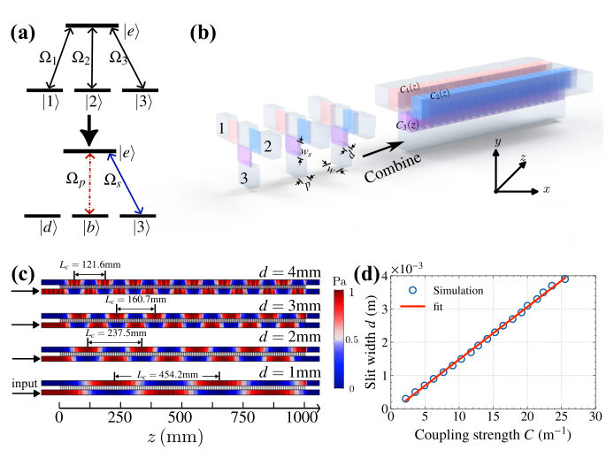
<figcaption class="paper-figure-caption"><b>Fig 1.</b> FIG. 1. (a) Schematic of the four-level system and its bright–dark reduction, where |d⟩is decoupled while |b⟩and |3⟩are coupled to |e⟩. (b) Acoustic implementation in a slit-coupled four-waveguide structure, where the spatially varying couplings C1(z), C2(z), and C3(z) are combined into a continuous device. (c) Simulated field distributions for different slit widths d, showing the dependence of the effective coupling. (d) Calibration curve of slit width d versus coupling strength C, where the simulation data are well described by a linear fit.</figcaption>
</figure>
<figure class="paper-figure-card">
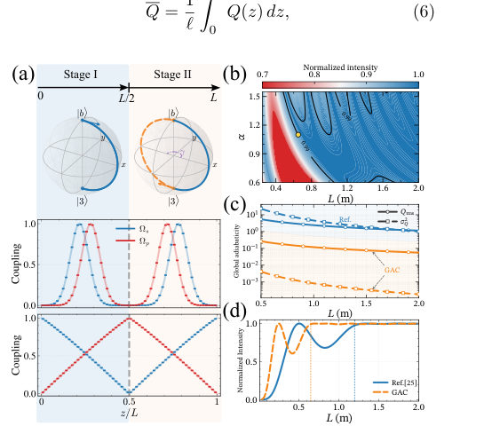
<figcaption class="paper-figure-caption"><b>Fig 2.</b> FIG. 2. GAC-guided envelope design and normalized target- output intensity. (a) Two-stage phase-stitched protocol and the reference Gaussian and GAC-guided coupling profiles, in- cluding their slit-period-sampled realizations. (b) Normalized target-output intensity of the GAC-guided power-law profiles in the (α, L) parameter space. The color scale denotes the normalized intensity, the black contour marks 0.99, and the marker denotes the selected working point. (c) Merged global adiabaticity metrics Qrms and σ2 Q for the reference Gaussian and GAC-guided profiles. (d) Normalized target-output in- tensity versus the total active coupling length L, comparing the reference Gaussian [25] and...</figcaption>
</figure>
<figure class="paper-figure-card">
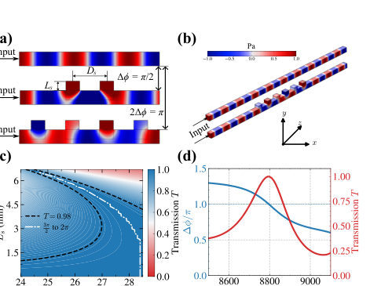
<figcaption class="paper-figure-caption"><b>Fig 3.</b> FIG. 3. (a) Schematic of the phase-shifting unit formed by two side-coupled resonators, with Ds and Ls denoting the key geometric parameters. (b) Three-dimensional acous- tic realization of the phase-shifting structure. (c) Simulated transmission map in the (Ds, Ls) parameter space, where the dashed contour marks the phase-shift range from 3π/2 to 2π and the high-transmission contour marks T = 0.98. (d) Sim- ulated phase shift ∆ϕ/π and transmission T versus frequency for the chosen design.</figcaption>
</figure>
<figure class="paper-figure-card">
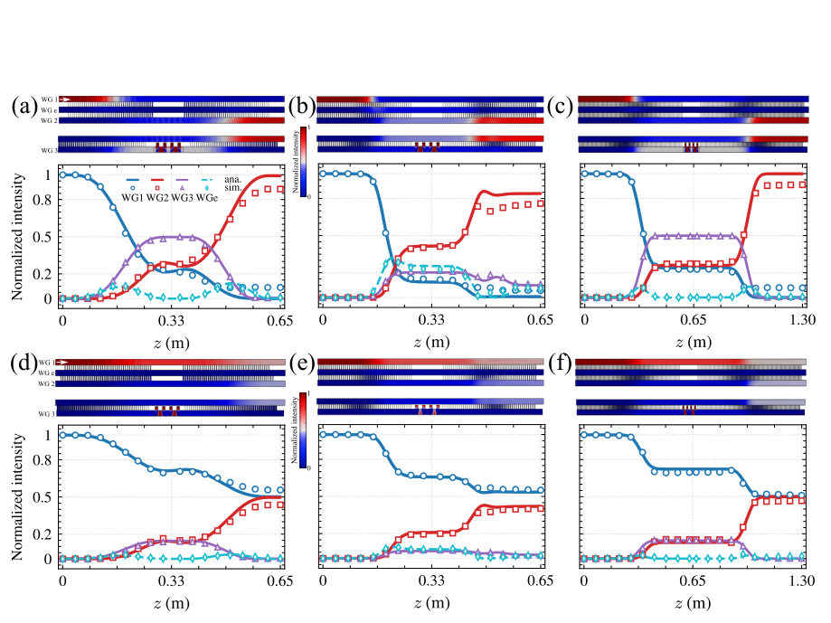
<figcaption class="paper-figure-caption"><b>Fig 4.</b> FIG. 4. Full-wave validation of the acoustic Pauli-X and Hadamard transformations. (a–c) Pauli-X transformation for the GAC-guided profile with an active coupling length of 65cm, the Gaussian profile with the same active coupling length of 65cm, and the longer Gaussian reference with an active coupling length of 130 cm, respectively. (d–f) Corresponding Hadamard transformation for the same three implementations. In each panel, the upper map shows the full-wave normalized acoustic intensity distribution, and the lower plot shows the four-waveguide normalized intensities as functions of the physical distance z. Solid curves denote the analytical coupled-mode predictions, while symbols denote...</figcaption>
</figure>
<figure class="paper-figure-card">
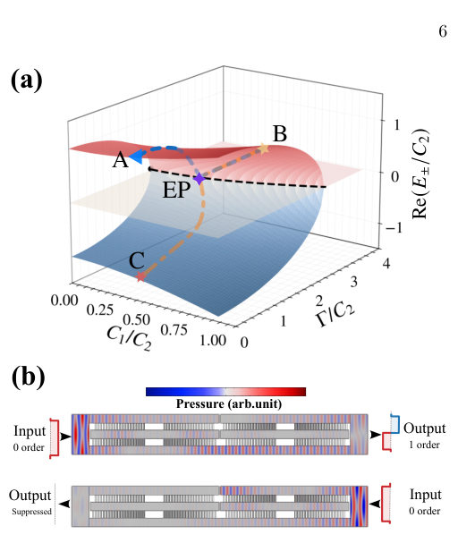
<figcaption class="paper-figure-caption"><b>Fig 5.</b> FIG. 5. Unidirectional acoustic mode conversion enabled by the phase-stitched holonomic acoustic structure. (a) Reduced two-mode non-Hermitian Riemann-surface/EP schematic. (b) Full-wave directional mode-conversion pressure fields. Un- der forward excitation, the incident zero-order mode is con- verted into the first-order output mode, whereas under reverse excitation the transmitted output is strongly suppressed.</figcaption>
</figure>
</div>

<p><strong>Summary.</strong> The authors present a method using acoustic waveguides to realize complex Non-Abelian holonomic transformations with high efficiency. By optimizing the coupling profile based on a Global Adiabatic Criterion (GAC), they significantly reduce the required device length compared to previous designs. Furthermore, they demonstrate that this same architecture can be used for unidirectional wave control by leveraging physics associated with an Exceptional Point.</p>
<p><strong>Why it may be interesting.</strong> This work directly applies advanced concepts from topological quantum computation (holonomy) and open quantum systems (non-Hermiticity/EPs) to a tangible, scalable physical platform (acoustics), providing quantitative design guidelines for fast adiabatic control.</p>
<details>
<summary>Detailed structure</summary>
<p><strong>Main problem.</strong> The primary goal is to demonstrate a compact, robust method for implementing Non-Abelian holonomic transformations (NHTs) in acoustic waveguides while minimizing nonadiabatic losses.</p>
<p><strong>Main result.</strong> The Global Adiabatic Criterion (GAC)-guided design achieves the required quantum gates with half the coupling length compared to standard Gaussian envelopes, and the structure also supports unidirectional mode conversion via Exceptional Point assistance.</p>
<p><strong>Method.</strong> The analysis uses coupled-mode theory (CMT) along propagation ($z$) combined with a global adiabaticity metric ($Q_{rms}$) derived from comparing GAC-guided power-law profiles against reference Gaussian envelopes.</p>
<p><strong>Model / system.</strong> The system is an acoustic platform realized via digitally coupled four-waveguide structures, which models a physical tripod configuration. The dynamics are analyzed using effective Hamiltonians and reduced to two-mode non-Hermitian pictures for mode conversion analysis.</p>
<p><strong>Key observables.</strong> Normalized target-output intensity (for Pauli-X/Hadamard gates), the global nonadiabatic burden ($Q_{rms}$), and the degree of unidirectional acoustic mode conversion.</p>
<p><strong>Important parameters / regimes.</strong> Coupling length ($\ell$), coupling envelopes (power-law vs. Gaussian), and the parameters defining the Exceptional Point (EP) curve in the reduced two-mode system.</p>
<p><strong>Assumptions / limitations.</strong> The surrounding solid structure is assumed to be acoustically rigid, and the design relies on mapping slit width to effective coupling strength via a linear fit.</p>
<p><strong>Figures summary.</strong> Figures compare target output intensities using GAC vs. Gaussian profiles (showing length reduction); another figure illustrates unidirectional mode conversion by comparing forward excitation (strong conversion) versus reverse excitation (suppressed transmission).</p>
<p><strong>Paper structure.</strong> The paper progresses from establishing the physical platform and the need for adiabatic control, to developing the GAC metric for optimization, demonstrating superior gate fidelity using GAC-guided envelopes over Gaussian ones, and finally extending the framework to analyze unidirectional mode conversion via non-Hermitian physics (EPs).</p>
</details>
<details>
<summary>Abstract</summary>
<p>An acoustic platform is validated for implementing compact non-Abelian holonomic transformations (NHTs) guided by a global adiabatic criterion (GAC). A tripod model is mapped onto a digitally coupled four-waveguide structure, where designed coupling envelopes and an acoustically-induced-transparency phase-control module implement a two-stage phase-stitched holonomic evolution. Compared with a reference Gaussian envelope, the GAC-guided power-law profile flattens the spatial distribution of the global nonadiabatic burden, thereby providing a quantitative basis for compact acoustic implementation. Full-wave simulations show Pauli-$X$ and Hadamard-type target transformations, with excellent agreement between the extracted normalized intensities and analytical coupled-mode predictions. These target responses are obtained with half the coupling length required by the reference Gaussian implementations. More uniquely, the same phase-stitched structure also supports unidirectional acoustic mode conversion, which is closely related to a reduced two-mode non-Hermitian picture associated with an encircled exceptional point (EP). These results validate acoustic NHTs as a robust geometric route for compact wave control, establish the GAC as a powerful guideline for fast adiabatic transport in digitally coupled systems, and further demonstrate that the same phase-stitched architecture supports unidirectional mode conversion through EP-assisted branch selection.</p>
</details>
<p><sub><a href="#top">↑ back to top</a></sub></p>

<p><a id="paper-2607.11554"></a></p>
<h3 id="robust-spin-qubit-coupler-via-minimal-kitaev-chain"><a href="http://arxiv.org/abs/2607.11554v1">Robust Spin Qubit Coupler via Minimal Kitaev Chain</a></h3>
<p><strong>Authors:</strong> Jiaan Qi, Hongqi Xu<br>
<strong>Type:</strong> theory · <strong>Category:</strong> quantum information and computing · <strong>PDF:</strong> <a href="https://arxiv.org/pdf/2607.11554v1">https://arxiv.org/pdf/2607.11554v1</a><br>
<strong>Analysis basis:</strong> full PDF text, analyzed in chunks
<strong>Topic relevance:</strong> <code>exotic spin models in light-matter</code> <strong>3/5</strong> · <code>spintronics-quantum-optics interface</code> <strong>3/5</strong> · <code>analog quantum simulation</code> <strong>2/5</strong> · <code>driven-dissipative phase transition</code> <strong>2/5</strong> · <code>methods for driven-dissipative</code> <strong>2/5</strong> · <code>Keldysh / 2PI / non-Gaussian methods</code> <strong>1/5</strong> · <code>Kondo &amp; dissipative impurity</code> <strong>1/5</strong> · <code>QC/QI experiment</code> <strong>1/5</strong> · <code>non-equilibrium dynamics</code> <strong>1/5</strong></p>
<div class="figure-strip-hint">↔ Scroll figures horizontally</div>
<div class="paper-figures-scroll">
<figure class="paper-figure-card">
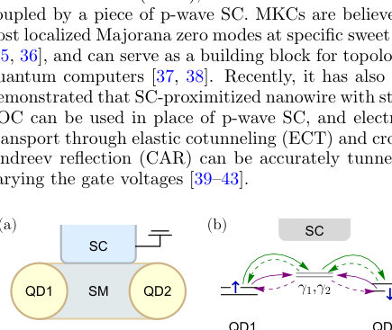
<figcaption class="paper-figure-caption"><b>Fig 1.</b> FIG. 1. (a) A minimal Kitaev chain with tunable gates for the dots and SC-proximitized nanowire. (b) The relevant spin and Andreev levels of the system under a small magnetic field. The blue and green curves (solid, then dashed arrows) illustrate the exchange paths through ECT and CAR.</figcaption>
</figure>
<figure class="paper-figure-card">
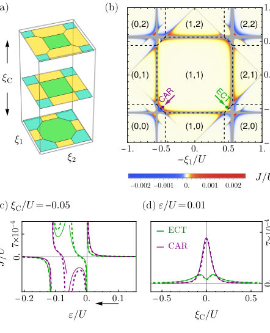
<figcaption class="paper-figure-caption"><b>Fig 2.</b> FIG. 3. (a) The CSD of an even-parity MKC controlled by ξC, with the (1, 1) region in green and the (0, 0), (0, 2), (2, 0), (2, 2) regions in cyan. (b) The exchange energy J over- laid on a CSD slice (ξC = −0.05U) for a typical MKC. The dashed lines represent the CSD boundaries and gray shades are level-crossing regions where the spin subspace cannot be defined [with (1, g, 1) population ≥0.9]. The green and pur- ple arrows indicate detuning paths to the (2, 0) and (0, 0) regions, where the exchange coupling is contributed by ECT and CAR processes. (c) J along the ECT/CAR detuning path (ξ1, ξ2) = (∓U/2 ± ε, U/2 −ε), with ε →0+ corresponding to the green/purple arrow in (b). The paths are...</figcaption>
</figure>
</div>

<p><strong>Summary.</strong> The paper proposes using a Minimal Kitaev Chain as an advanced coupler for spin qubits. By exploiting the Andreev Bound States within this structure, researchers can achieve strong, gate-tunable coupling while simultaneously engineering a 'sweet spot' that renders the qubit highly immune to charge noise. This results in a significantly enhanced coherence time for solid-state quantum computation.</p>
<p><strong>Why it may be interesting.</strong> This work directly addresses hardware challenges in solid-state quantum computing by proposing a physical mechanism (MKC/ABS control) to engineer robust, tunable interactions between qubits, which is central to scaling up quantum processors.</p>
<details>
<summary>Detailed structure</summary>
<p><strong>Main problem.</strong> The primary goal is developing a robust, gate-tunable coupling module for spin qubits that maintains strong interaction while exhibiting high immunity to local charge noise.</p>
<p><strong>Main result.</strong> Using a Minimal Kitaev Chain (MKC) coupler allows the creation of a 'Kitaev-spin' qubit operating at a sweet spot where coupling is strong and first-order insensitive to charge fluctuations, leading to significantly improved coherence times.</p>
<p><strong>Method.</strong> The analysis employs quasi-degenerate perturbation theory applied to a hybrid semiconductor/superconductor system to derive an effective anisotropic exchange coupling Hamiltonian for the spin subspace.</p>
<p><strong>Model / system.</strong> The physical system is a double quantum dot coupled via a Minimal Kitaev Chain (MKC) segment containing Andreev Bound States (ABSs). The model uses a full Hamiltonian analyzed in the even-parity sector, focusing on deriving an effective exchange coupling $J$ mediated by ABSs.</p>
<p><strong>Key observables.</strong> Inter-qubit coupling strength ($J$), decoherence time ($T_2^*$), and the gradient of the coupling strength ($
abla J$) with respect to control parameters.</p>
<p><strong>Important parameters / regimes.</strong> Chemical potential of ABS ($\xi_C$), detuning potentials ($\xi_{1,2}$), charging energy ($U_C$), and superconducting coherence length ($\sim 1\mu	ext{m}$).</p>
<p><strong>Assumptions / limitations.</strong> The analysis assumes the system can be treated in the even-parity sector, neglecting parity poisoning events relative to spin decoherence time.</p>
<p><strong>Figures summary.</strong> Figures illustrate the physical setup (FIG. 1), energy level diagrams showing induced gaps and coupling ($J$) vs detuning (FIG. 2), and Charge Stability Diagrams (CSD) mapping out operational regimes for tuning $J$ and identifying sweet spots (Fig. 3).</p>
<p><strong>Paper structure.</strong> The paper progresses by first establishing the physical model using the MKC coupler, deriving the effective Hamiltonian via perturbation theory, identifying control parameters ($\xi_C$), locating the noise-immune 'sweet spot' where $
abla J \approx 0$, and finally benchmarking the resulting qubit coherence time against other encoding schemes.</p>
</details>
<details>
<summary>Abstract</summary>
<p>While a minimal Kitaev chain is promised to host unprotected Majorana zero modes, its role for spin qubits is relatively underappreciated. Following recent breakthroughs in the fine control of transport behaviors, we propose to use minimal Kitaev chain as a robust coupling module between spin qubits. Long-distance, anisotropic exchange coupling can be mediated by the Andreev bound states (ABSs) in the hybrid segment. The chemical potential of ABS gives a simple way to selectively control the coupling strength and its response to local perturbations. Moreover, this additional control degree of freedom creates a unique sweet spot, allowing both strong coupling and first-order immunity against charge noise. The protected qubit encoded on the minimal Kitaev chain at the sweet spot is shown to boast over 200 fold improvement in decoherence time.</p>
</details>
<p><sub><a href="#top">↑ back to top</a></sub></p>

<p><a id="paper-2607.11454"></a></p>
<h3 id="tunable-non-hermitian-skin-effect-and-topological-phases-in-ladders-with-staggered-nonreciprocal-inter-leg-hopping"><a href="http://arxiv.org/abs/2607.11454v1">Tunable non-Hermitian skin effect and topological phases in ladders with staggered nonreciprocal inter-leg hopping</a></h3>
<p><strong>Authors:</strong> Pu-Xuan Li, Qi-Bo Zeng<br>
<strong>Type:</strong> theory · <strong>Category:</strong> other · <strong>PDF:</strong> <a href="https://arxiv.org/pdf/2607.11454v1">https://arxiv.org/pdf/2607.11454v1</a><br>
<strong>Analysis basis:</strong> full PDF text, analyzed in chunks
<strong>Topic relevance:</strong> <code>analog quantum simulation</code> <strong>3/5</strong> · <code>driven-dissipative phase transition</code> <strong>3/5</strong> · <code>methods for driven-dissipative</code> <strong>3/5</strong> · <code>non-equilibrium dynamics</code> <strong>2/5</strong> · <code>non-equilibrium universality</code> <strong>2/5</strong> · <code>Keldysh / 2PI / non-Gaussian methods</code> <strong>1/5</strong> · <code>Kondo &amp; dissipative impurity</code> <strong>1/5</strong> · <code>correlated / nonlocal dissipation</code> <strong>1/5</strong></p>
<div class="figure-strip-hint">↔ Scroll figures horizontally</div>
<div class="paper-figures-scroll">
<figure class="paper-figure-card">
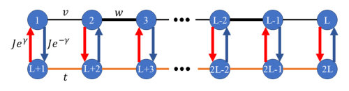
<figcaption class="paper-figure-caption"><b>Fig 1.</b> FIG. 1. (Color online) Schematic illustration of the ladder model. The upper leg is an SSH chain with alternating hop- ping amplitudes v and w, while the lower leg is a uniform tight-binding chain with hopping amplitude t. The inter-leg hopping is nonreciprocal, with amplitudes Jeγ and Je−γ, and alternates between odd and even sites in the two chains.</figcaption>
</figure>
<figure class="paper-figure-card">
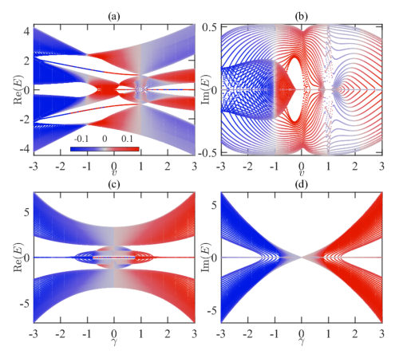
<figcaption class="paper-figure-caption"><b>Fig 2.</b> FIG. 2. (Color online) Energy spectra of the ladder model un- der open boundary conditions. Panels (a) and (b) show the real and imaginary parts of the eigenenergies, respectively, as functions of v for γ = −0.5. The color scale represents the dIPR of the corresponding eigenstates. Positive (nega- tive) dIPR values indicate states localized at the right (left) boundary of the ladder, whereas dIPR ≈0 corresponds to ex- tended states. Panels (c) and (d) show the real and imaginary parts of the eigenenergies, respectively, as functions of γ for v = 1.5. Other parameters are w = t = J = 1 and L = 100.</figcaption>
</figure>
<figure class="paper-figure-card">
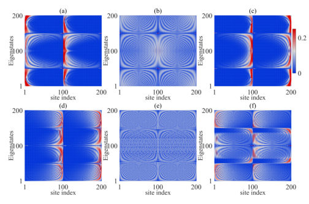
<figcaption class="paper-figure-caption"><b>Fig 3.</b> FIG. 3. (Color online) Spatial distributions of the eigenstates in the ladder model for different values of v: (a) v = −1.5, (b) v = −1.0, (c) v = −0.5, (d) v = 0.5, (e) v = 1.0, and (f) v = 1.5, with γ = −0.5. The eigenstates are ordered according to the real parts of the corresponding eigenenergies. The color scale represents the amplitude |ψ| of the eigenstates. The site indices 1 ≤j ≤100 correspond to the upper leg of the ladder, whereas 101 ≤j ≤200 correspond to the lower leg. Other parameters are w = t = J = 1.</figcaption>
</figure>
<figure class="paper-figure-card">
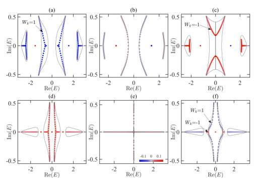
<figcaption class="paper-figure-caption"><b>Fig 4.</b> FIG. 4. (Color online) Energy spectra of the ladder model under open boundary conditions (OBCs, colored dots) and periodic boundary conditions (PBCs, black dots) for γ = −0.5 and different values of v: (a) v = −1.5, (b) v = −1.0, (c) v = −0.5, (d) v = 0.5, (e) v = 1.0, and (f) v = 1.5. The color scale represents the dIPR of the OBC eigenstates. The labels Wk = ±1 denote the spectral winding numbers of the corresponding PBC spectra, which determine the direction of the NHSE under OBCs. Other parameters are the same as those in Fig. 3.</figcaption>
</figure>
<figure class="paper-figure-card">

<figcaption class="paper-figure-caption"><b>Fig 5.</b> Figure 4 compares the energy spectra under OBCs and PBCs for the ladder model with v varying from −1.5 to 1.5, while the other parameters are the same as those in Fig. 3. As shown in Fig. 4, the OBC spectrum is enclosed by the corresponding PBC spectrum except at the crit- ical points v = ±1 [Figs. 4(b) and 4(e)]. At these two critical points, the OBC and PBC spectra coincide and form open arcs rather than closed loops in the complex- energy plane. Consequently, the NHSE is absent under OBCs, consistent with the extended eigenstates shown in Figs. 3(b) and 3(e). For the remaining parameter regimes, the direction of the NHSE can be characterized by the spectral winding number of the PBC...</figcaption>
</figure>
</div>

<p><strong>Summary.</strong> This work explores a ladder model featuring staggered, nonreciprocal inter-leg hopping to study its impact on non-Hermiticity and topology. The authors show that this specific coupling mechanism allows for the precise tuning of the Non-Hermitian Skin Effect direction and magnitude. Crucially, they map out parameter regimes where robust topological edge modes exist, demonstrating a powerful tool for engineering quantum states in quasi-1D systems.</p>
<p><strong>Why it may be interesting.</strong> The ability to engineer topological phases and control boundary localization using non-Hermitian terms via structural hopping is highly relevant for designing synthetic quantum materials or optical lattices where directional coupling can be precisely tuned.</p>
<details>
<summary>Detailed structure</summary>
<p><strong>Main problem.</strong> The study investigates how staggered nonreciprocal inter-leg hopping influences both the non-Hermitian skin effect (NHSE) and topological phases in a ladder lattice.</p>
<p><strong>Main result.</strong> The research demonstrates that this specific coupling mechanism allows for engineering tunable NHSE, enabling its reversal and energy dependence. Furthermore, it establishes a clear link between nonreciprocity and topology, showing how the system can transition into trivial phases by tuning parameters.</p>
<p><strong>Method.</strong> The analysis employs theoretical diagonalization of the Hamiltonian under both open and periodic boundary conditions, utilizing diagnostics like the directional Inverse Participation Ratio (dIPR) and spectral/real-space winding numbers.</p>
<p><strong>Model / system.</strong> The system is a ladder model composed of an Su-Schrieffer-Heeger (SSH) chain coupled to a uniform tight-binding chain via staggered nonreciprocal inter-leg hopping. The Hamiltonian incorporates parameters controlling the SSH hopping ($v$) and the nonreciprocity ($\gamma$).</p>
<p><strong>Key observables.</strong> Directional Inverse Participation Ratio (dIPR), spectral winding number, real-space winding numbers ($W=\pm1$), zero-energy topological edge modes.</p>
<p><strong>Important parameters / regimes.</strong> SSH hopping strength ($v$), inter-leg nonreciprocity ($\gamma$).</p>
<p><strong>Assumptions / limitations.</strong> The analysis assumes the system can be modeled by a tight-binding Hamiltonian and that parameters are real. A limitation noted is potential ambiguity near phase boundaries due to finite precision.</p>
<p><strong>Figures summary.</strong> Figures illustrate eigenstate localization (dIPR) for varying $v$, compare OBC vs PBC spectra using winding numbers, and present phase diagrams mapping topological regimes ($W=\pm1$) in the $v-\gamma$ plane.</p>
<p><strong>Paper structure.</strong> The paper systematically analyzes the model by first establishing the role of nonreciprocity in inducing NHSE. It then explores how tuning parameters like $v$ controls the direction and energy dependence of the skin effect, culminating in a phase diagram that maps out topologically nontrivial regimes controlled by $\gamma$.</p>
</details>
<details>
<summary>Abstract</summary>
<p>We investigate the non-Hermitian skin effect (NHSE) and topological phases in a ladder model with staggered nonreciprocal inter-leg hopping, consisting of an Su-Schrieffer-Heeger (SSH) chain coupled to a normal tight-binding chain. By tuning the system parameters, we show that the direction of the NHSE under open boundary conditions can be reversed and can even become energy dependent. The NHSE is further characterized by the spectral winding number under periodic boundary conditions. We further demonstrate that the inter-leg coupling significantly enlarges the topologically nontrivial parameter regime. Remarkably, the zero-energy topological edge modes reside on different legs of the ladder and are characterized by real-space winding numbers $W=\pm1$. Furthermore, increasing the nonreciprocity of the inter-leg hopping modifies the topological phase boundaries and eventually drives the system into a topologically trivial phase. Our results establish staggered nonreciprocal inter-leg hopping as an effective mechanism for engineering both the non-Hermitian skin effect and topological phases in ladder systems.</p>
</details>
<p><sub><a href="#top">↑ back to top</a></sub></p>

<p><a id="paper-2607.10454"></a></p>
<h3 id="krylov-complexity-for-time-dependent-hamiltonians"><a href="http://arxiv.org/abs/2607.10454v1">Krylov Complexity for Time-Dependent Hamiltonians</a></h3>
<p><strong>Authors:</strong> Amin Faraji Astaneh, Parsa Kafashi<br>
<strong>Type:</strong> theory · <strong>Category:</strong> statistical mechanics · <strong>PDF:</strong> <a href="https://arxiv.org/pdf/2607.10454v1">https://arxiv.org/pdf/2607.10454v1</a><br>
<strong>Analysis basis:</strong> full PDF text, analyzed in chunks
<strong>Topic relevance:</strong> <code>analog quantum simulation</code> <strong>3/5</strong> · <code>methods for driven-dissipative</code> <strong>3/5</strong> · <code>non-equilibrium dynamics</code> <strong>3/5</strong> · <code>entanglement &amp; information structure</code> <strong>2/5</strong> · <code>non-equilibrium universality</code> <strong>2/5</strong> · <code>Keldysh / 2PI / non-Gaussian methods</code> <strong>1/5</strong> · <code>driven-dissipative phase transition</code> <strong>1/5</strong></p>
<div class="figure-strip-hint">↔ Scroll figures horizontally</div>
<div class="paper-figures-scroll">
<figure class="paper-figure-card">
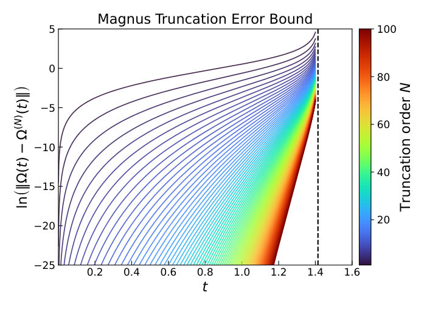
<figcaption class="paper-figure-caption"><b>Fig 1.</b> Figure 1: Magnus truncation error bound for the time-dependent Hamiltonian (42). The figure shows the bound in (60) as a function of time for truncation orders N = 1 to 100. The vertical dashed line indicates the convergence radius in time, beyond which the bound diverges. Higher truncation orders yield exponentially improved accuracy within the convergence regime.</figcaption>
</figure>
<figure class="paper-figure-card">
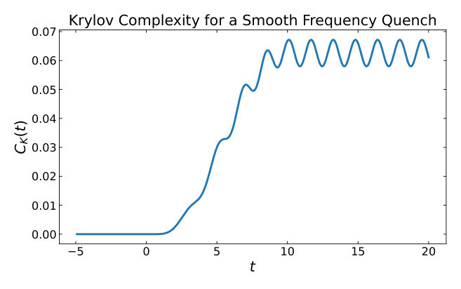
<figcaption class="paper-figure-caption"><b>Fig 2.</b> Figure 2: Krylov complexity for a soft quench with parameters ω0 = 1, ω1 = 2, and τ = 10.</figcaption>
</figure>
<figure class="paper-figure-card">
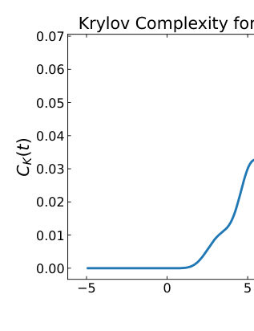
<figcaption class="paper-figure-caption"><b>Fig 3.</b> Fig. 3.</figcaption>
</figure>
<figure class="paper-figure-card">
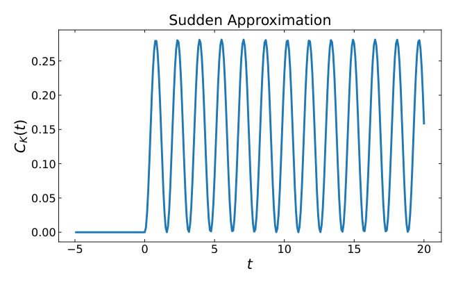
<figcaption class="paper-figure-caption"><b>Fig 4.</b> Figure 3: Krylov complexity for an almost sudden quench with parameters ω0 = 1, ω1 = 2, and τ = 0.1.</figcaption>
</figure>
<figure class="paper-figure-card">
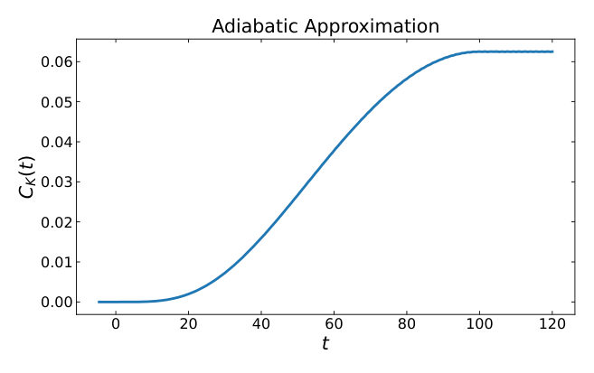
<figcaption class="paper-figure-caption"><b>Fig 5.</b> Figure 4: Krylov complexity for a very slow soft quench with parameters ω0 = 1, ω1 = 2, and τ = 100.</figcaption>
</figure>
</div>

<p><strong>Summary.</strong> This paper presents advanced theoretical techniques to calculate Krylov complexity for quantum states evolving under time-dependent Hamiltonians. It addresses the limitations of standard approximations by introducing a robust piecewise Magnus expansion method. This provides physicists with practical tools to analyze complexity growth in diverse, non-equilibrium quantum systems.</p>
<p><strong>Why it may be interesting.</strong> This work provides essential computational tools (piecewise Magnus) for analyzing quantum dynamics in non-equilibrium settings, which is crucial for understanding complex phenomena in driven many-body systems relevant to AMO physics and quantum optics.</p>
<details>
<summary>Detailed structure</summary>
<p><strong>Main problem.</strong> The paper investigates Krylov complexity for quantum states evolving under time-dependent Hamiltonians, which is complicated by non-commuting time evolution operators.</p>
<p><strong>Main result.</strong> It develops practical methods, including the piecewise Magnus expansion, to reliably compute complexity growth in general time-dependent systems where global approximations fail.</p>
<p><strong>Method.</strong> The core methodology involves extending Floquet theory and utilizing the Magnus expansion, particularly developing a piecewise variant for long-time evolution analysis.</p>
<p><strong>Model / system.</strong> The study applies to general time-dependent quantum systems, including periodically driven models (analyzed via Floquet theory) and quadratic oscillators.</p>
<p><strong>Key observables.</strong> Krylov complexity ($C_K(t)$), which quantifies how an initial state explores the Hilbert space under time evolution.</p>
<p><strong>Important parameters / regimes.</strong> Driving period ($T$), time length ($t$), commutator sizes, and convergence parameters ($\delta\xi$).</p>
<p><strong>Assumptions / limitations.</strong> The global Magnus expansion is assumed to fail or lose accuracy over long time intervals, necessitating piecewise approximations.</p>
<p><strong>Figures summary.</strong> Figure 1 illustrates the bound on the Magnus truncation error; Figure 4 shows Krylov complexity for a very slow soft quench, demonstrating adiabatic behavior.</p>
<p><strong>Paper structure.</strong> The paper progresses from establishing the challenge of non-commuting Hamiltonians to introducing Floquet theory and the standard Magnus expansion. It then details the necessary extension using piecewise methods for general time dependence, concluding with specific derivations for solvable models like squeezed states.</p>
</details>
<details>
<summary>Abstract</summary>
<p>We investigate Krylov spread complexity for states evolving under time-dependent Hamiltonians. For periodically driven systems, we formulate the problem within Floquet theory and show how the Magnus expansion provides a systematic approximation when the Floquet Hamiltonian is not available in closed form. We then extend this framework beyond periodic driving and demonstrate that, in addition to the globally truncated Magnus expansion, a piecewise Magnus expansion provides a reliable method when the global expansion loses convergence or accuracy. Our results provide practical tools for analyzing complexity growth in a broad class of time-dependent quantum systems.</p>
</details>
<p><sub><a href="#top">↑ back to top</a></sub></p>

<p><a id="paper-2607.11217"></a></p>
<h3 id="quantum-multiscale-modeling-a-hierarchy-of-algorithms-for-complex-chemical-systems"><a href="http://arxiv.org/abs/2607.11217v1">Quantum Multiscale Modeling: A Hierarchy of Algorithms for Complex Chemical Systems</a></h3>
<p><strong>Authors:</strong> Seenivasan Hariharan, Kareljan Schoutens, Sachin Kinge, Lucas Visscher<br>
<strong>Type:</strong> theory · <strong>Category:</strong> quantum information and computing · <strong>PDF:</strong> <a href="https://arxiv.org/pdf/2607.11217v1">https://arxiv.org/pdf/2607.11217v1</a><br>
<strong>Analysis basis:</strong> full PDF text, analyzed in chunks
<strong>Topic relevance:</strong> <code>methods for driven-dissipative</code> <strong>3/5</strong> · <code>non-equilibrium dynamics</code> <strong>3/5</strong> · <code>entanglement &amp; information structure</code> <strong>2/5</strong> · <code>non-equilibrium universality</code> <strong>2/5</strong> · <code>Keldysh / 2PI / non-Gaussian methods</code> <strong>1/5</strong> · <code>analog quantum simulation</code> <strong>1/5</strong> · <code>correlated / nonlocal dissipation</code> <strong>1/5</strong> · <code>driven-dissipative phase transition</code> <strong>1/5</strong> · <code>quantum measurements</code> <strong>1/5</strong></p>
<div class="figure-strip-hint">↔ Scroll figures horizontally</div>
<div class="paper-figures-scroll">
<figure class="paper-figure-card">
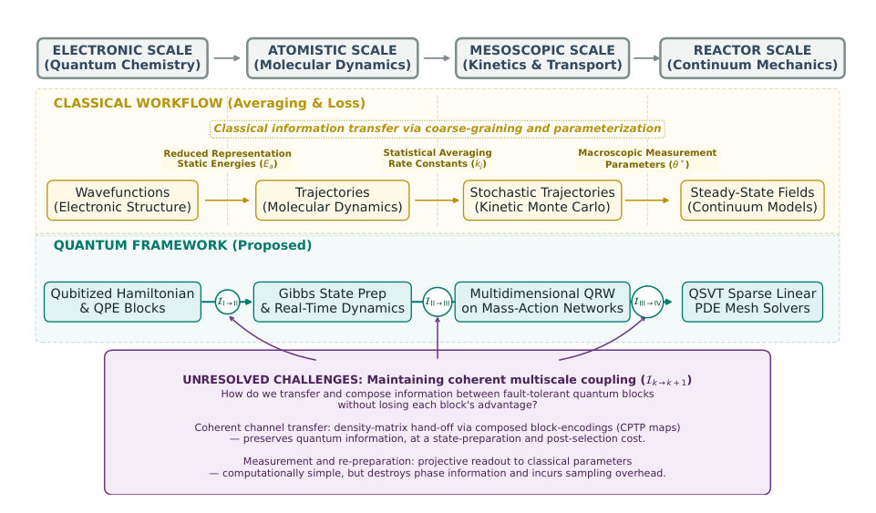
<figcaption class="paper-figure-caption"><b>Fig 1.</b> Figure 1: Comparison of classical and fault-tolerant quantum workflows across electronic, atomistic, mesoscopic, and continuum scales. Classical approaches progressively compress information through averaging, reduced representations, and measurement. The proposed quantum hierarchy aims to compose coherent transformations across scales using fault- tolerant quantum algorithms. Interface nodes Ik→k+1 denote unresolved challenges in main- taining coherent multiscale coupling.</figcaption>
</figure>
</div>

<p><strong>Summary.</strong> This paper proposes a novel theoretical framework for achieving end-to-end quantum advantage in multiscale simulations of complex chemistry. It moves beyond merely applying quantum algorithms to individual physical regimes by rigorously analyzing the inter-scale information transfer as a composition of quantum channels. The central argument is that the fidelity of this boundary communication dictates whether a true, scalable quantum speedup can be realized.</p>
<p><strong>Why it may be interesting.</strong> This work bridges quantum computation theory with complex condensed matter/surface science modeling. For AMO physicists, it suggests that future breakthroughs in simulating large chemical systems might require treating the entire simulation pipeline—not just the core Hamiltonian evolution—as a quantum information problem.</p>
<details>
<summary>Detailed structure</summary>
<p><strong>Main problem.</strong> The primary challenge is developing a systematic, coherent quantum framework for multiscale modeling that can maintain quantum advantage across disparate physical scales (electronic to continuum). The authors aim to treat inter-scale information transfer as a composition of quantum channels.</p>
<p><strong>Main result.</strong> End-to-end quantum advantage depends critically on the structure and fidelity of the information transfer between algorithmic layers, rather than solely on achieving speedups at individual physical scales. They propose viewing this interface as a quantum channel composition problem.</p>
<p><strong>Method.</strong> The work maps established classical multiscale techniques (e.g., DFT $
ightarrow$ MD $
ightarrow$ kMC $
ightarrow$ PDEs) onto corresponding fault-tolerant quantum algorithms (QPE, Hamiltonian simulation, QRW, QSVT solvers). The core methodology involves analyzing the information flow across these boundaries as composed quantum channels.</p>
<p><strong>Model / system.</strong> The framework is demonstrated using complex chemical systems, specifically CO oxidation over Pt(111), which requires coupling four distinct physical scales: electronic ($\sim 1$ Å), atomistic ($\sim 10$ nm), mesoscopic ($\sim 1 \mu$m), and continuum ($\sim 1$ cm).</p>
<p><strong>Key observables.</strong> Conversion, selectivity, operando stability, adsorption energies ($\Delta E_{	ext{ads}}$), activation barriers ($E_a$), turnover frequency (TOF), and the propagation of quantum measurement uncertainty.</p>
<p><strong>Important parameters / regimes.</strong> The scales themselves define key parameters: time/length separation (fs to s), temperature dependence ($T$), coverage ($    heta$), and algorithmic constraints like memory architecture and matrix conditioning.</p>
<p><strong>Assumptions / limitations.</strong> It is assumed that fault-tolerant quantum algorithms exist for each scale, but the primary focus shifts to characterizing the information loss or preservation during the transition between these layers. The authors highlight several unresolved questions regarding complexity bounds and error propagation.</p>
<p><strong>Figures summary.</strong> The notes suggest a hierarchical structure (Table 1) mapping physical scales to classical methods and their quantum analogues, emphasizing the proposed 'quantum channel' for inter-scale transfer.</p>
<p><strong>Paper structure.</strong> The paper systematically identifies the four necessary physical scales, maps canonical algorithms onto them, and then focuses heavily on developing the mathematical formalism to treat the information passing <em>between</em> these layers as a composed quantum map, culminating in defining key open questions regarding uncertainty propagation and total query complexity.</p>
</details>
<details>
<summary>Abstract</summary>
<p>Multiscale modeling of complex chemical systems requires algorithms that operate coherently across electronic, atomistic, mesoscopic, and continuum scales. While quantum algorithms have been proposed for each regime, no systematic framework exists to compose them across scale boundaries. Here, we identify the conditions under which fault-tolerant quantum algorithms might preserve scale-specific quantum advantages. We map quantum phase estimation, Hamiltonian simulation with Gibbs state preparation, quantum random walks, and quantum partial differential equation solvers onto electronic structure, molecular dynamics, mesoscopic kinetics, and continuum reactor physics, respectively. Crucially, these correspondences do not imply unconditional end-to-end quantum advantage; speedups depend heavily on state preparation, memory architectures, matrix conditioning, and classical readout costs. Six unresolved questions define this composition problem, illustrated via a quantum hierarchy for \ce{CO} oxidation over \ce{Pt(111)}. We propose viewing inter-scale transfer as a quantum channel composition problem at the interface of algorithm design and non-equilibrium statistical mechanics, and ask whether information loss at scale boundaries is intrinsic to multiscale modeling or merely a consequence of lossy classical transduction between algorithmic layers. The resulting roadmap suggests that multiscale quantum advantage is governed primarily by the structure of information transfer between algorithmic layers, rather than by performance at individual scales alone.</p>
</details>
<p><sub><a href="#top">↑ back to top</a></sub></p>

<p><a id="paper-2607.10083"></a></p>
<h3 id="unified-phase-space-mapping-of-quantum-observables-in-a-multi-driven-vapor-resonance-fluorescence-as-an-electrometry-probe-and-correlation-witness"><a href="http://arxiv.org/abs/2607.10083v1">Unified Phase-Space Mapping of Quantum Observables in a Multi-Driven Vapor: Resonance Fluorescence as an Electrometry Probe and Correlation Witness</a></h3>
<p><strong>Authors:</strong> M. S. Ateto, Emad K. Jaradat, S. M. Abo-Dahab<br>
<strong>Type:</strong> theory · <strong>Category:</strong> other · <strong>PDF:</strong> <a href="https://arxiv.org/pdf/2607.10083v1">https://arxiv.org/pdf/2607.10083v1</a><br>
<strong>Analysis basis:</strong> full PDF text, analyzed in chunks
<strong>Topic relevance:</strong> <code>entanglement &amp; information structure</code> <strong>3/5</strong> · <code>methods for driven-dissipative</code> <strong>3/5</strong> · <code>Keldysh / 2PI / non-Gaussian methods</code> <strong>2/5</strong> · <code>non-equilibrium dynamics</code> <strong>2/5</strong> · <code>analog quantum simulation</code> <strong>1/5</strong> · <code>correlated / nonlocal dissipation</code> <strong>1/5</strong> · <code>driven-dissipative phase transition</code> <strong>1/5</strong> · <code>interference shaping light</code> <strong>1/5</strong> · <code>quantum measurements</code> <strong>1/5</strong></p>
<div class="figure-strip-hint">↔ Scroll figures horizontally</div>
<div class="paper-figures-scroll">
<figure class="paper-figure-card">
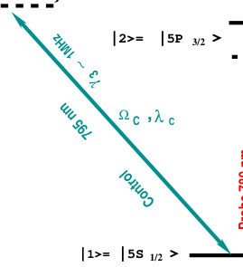
<figcaption class="paper-figure-caption"><b>Fig 1.</b> FIG. 1: The four-level V+Θ system under consideration.</figcaption>
</figure>
<figure class="paper-figure-card">
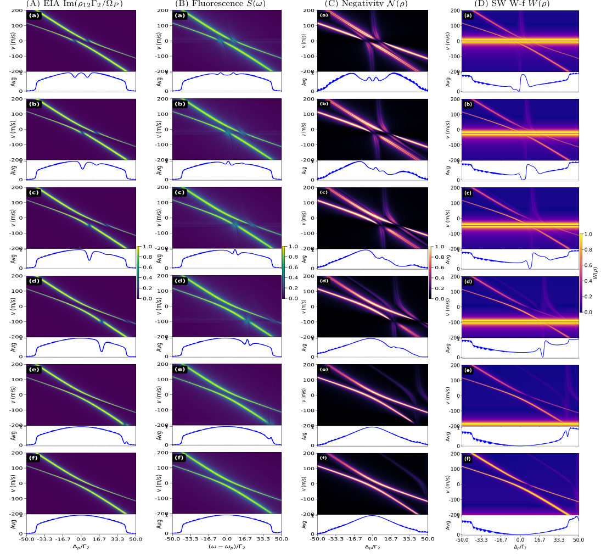
<figcaption class="paper-figure-caption"><b>Fig 2.</b> FIG. 2: Doppler-resolved maps of (A) normalized absorption Im{ρ12Γ2/ΩP }, (B) fluorescence S(ω, v), (C) negativity N AB Dop, and (D) SW Wigner function W(ρ), for ∆D = 0, ΩC = 3, ΩD = 12, and ∆C = 0, 5, 10, 20, 40, 50 Γ2 from (a) to (f). All fields co-propagate and are directed opposite to the atomic motion.</figcaption>
</figure>
<figure class="paper-figure-card">
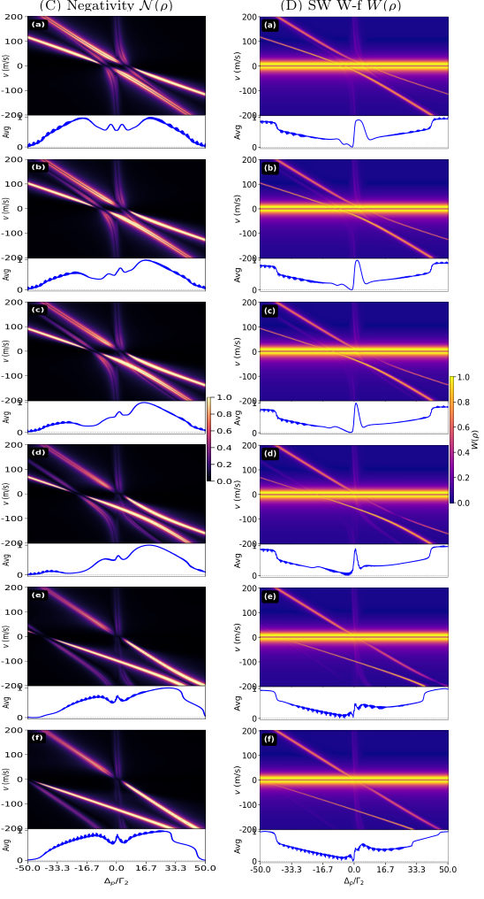
<figcaption class="paper-figure-caption"><b>Fig 3.</b> FIG. 3: Same as Fig. 2, but for ∆C = 0 and ∆D = 0, 5, 10, 20, 40, 50 Γ2 from (a) to (f).</figcaption>
</figure>
<figure class="paper-figure-card">
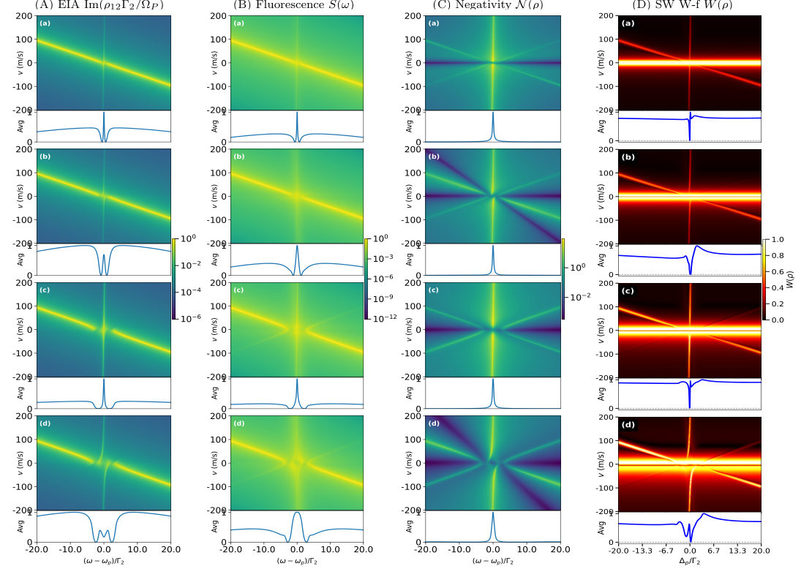
<figcaption class="paper-figure-caption"><b>Fig 4.</b> FIG. 4: Velocity-resolved maps (integrands) and Doppler-averaged profiles for absorption (A), fluorescence (B), negativity (C), and Wigner function (D) under varying intensities (ΩC, ΩD): (a) (Γ2, Γ2), (b) (2Γ2, Γ2), (c) (3Γ2, 3Γ2), and (d) (5Γ2, 2Γ2). Balanced fields isolate a velocity-insensitive coherence ridge at ∆P = 0, maximizing EIA contrast and phase-space correlations, whereas intensity asymmetry splits the resonance channels and induces severe dephasing.</figcaption>
</figure>
<figure class="paper-figure-card">
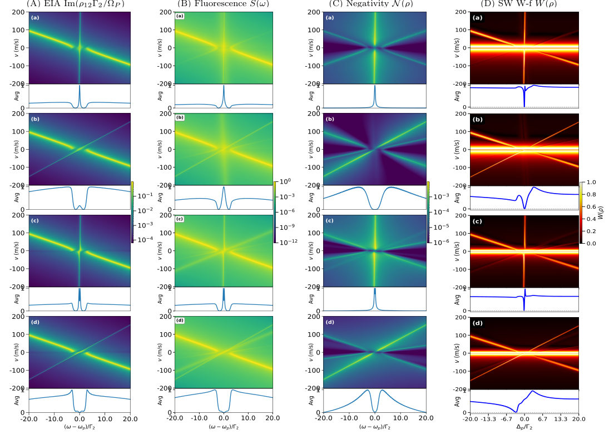
<figcaption class="paper-figure-caption"><b>Fig 5.</b> FIG. 5: Influence of wavelength configuration on the four observables for fixed intensities (ΩC, ΩD) = (3Γ2, 12Γ2): (a) fully matched, (b) λD mismatch, (c) λC mismatch, and (d) complete mismatch. A λC mismatch suppresses the Raman pole generating an AT doublet, while a λD mismatch activates a linear velocity term that rotates the resonance trajectories, smearing the ensemble quantum correlations.</figcaption>
</figure>
</div>

<p><strong>Summary.</strong> The paper presents a unified theory mapping various quantum observables—including entanglement and phase-space structure—onto the resonance fluorescence signal in multi-driven atomic vapors. By utilizing the SW Wigner function, it shows that fluorescence is remarkably robust against Doppler broadening, making it an excellent, non-invasive probe for characterizing coherence and quantifying quantum correlations.</p>
<p><strong>Why it may be interesting.</strong> This work provides a powerful theoretical bridge between complex quantum information measures (entanglement) and easily measurable spectroscopic quantities (fluorescence), offering practical tools for quantum sensing in warm atomic media.</p>
<details>
<summary>Detailed structure</summary>
<p><strong>Main problem.</strong> To develop a unified framework for analyzing multiple quantum observables (absorption, fluorescence, entanglement) in a multi-driven atomic vapor while accounting for Doppler broadening.</p>
<p><strong>Main result.</strong> The study establishes that resonance fluorescence acts as a robust, eigenvalue-free observable capable of tracking coherence geometry and witnessing quantum correlations despite severe Doppler dephasing.</p>
<p><strong>Method.</strong> It employs a density-matrix formalism combined with the Stratonovich-Weyl (SW) Wigner function to map diverse observables onto a common phase-space structure.</p>
<p><strong>Model / system.</strong> The system is a four-level atomic vapor driven by multiple lasers in a V+ladder configuration, analyzed using the Lindblad master equation and incorporating thermal velocity averaging for Doppler broadening.</p>
<p><strong>Key observables.</strong> Absorption spectrum ($\chi$), Resonance Fluorescence spectrum ($S(\omega)$), Entanglement Negativity, and SW Wigner quasiprobability distribution $W(\psi)$.</p>
<p><strong>Important parameters / regimes.</strong> Doppler-broadened regime, strong driving fields (Rabi frequencies $\Omega$), detunings ($\Delta$), and the coherence-driven phase-space structure.</p>
<p><strong>Assumptions / limitations.</strong> The analysis relies on thermal velocity averaging and assumes that fluorescence retains spectral features under strong driving where susceptibility methods fail.</p>
<p><strong>Figures summary.</strong> Figures illustrate the four-level V+Theta system setup, detailing the Hamiltonian formulation, master equation dynamics, and the derivation of both susceptibility and fluorescence spectra via velocity averaging.</p>
<p><strong>Paper structure.</strong> The paper progresses from defining the physical setup (V+ladder system) to developing the density-matrix formalism. It then introduces the SW Wigner function for phase-space mapping before systematically analyzing how fluorescence and entanglement negativity emerge as complementary, experimentally accessible diagnostics.</p>
</details>
<details>
<summary>Abstract</summary>
<p>We present a unified, geometry-resolved framework for analyzing absorption, resonance fluorescence, entanglement negativity, and phase-space quasiprobability in Doppler-broadened four-level atomic vapor. Using a density-matrix formalism with thermal velocity averaging and exact dressed-state diagonalization, we show that these observables constitute complementary projections of a common coherence-driven phase-space structure governed by multiphoton interference. Central to this framework is the Stratonovich-Weyl (SW) Wigner function, which provides a unified phase-space representation incorporating both populations and coherences. Direct comparison reveals a near one-to-one correspondence between SW quasiprobability distributions and entanglement landscapes, with geometry-dependent features, including hyperbolic dispersion asymptotes and split resonance ridges, consistently preserved. Furthermore, isolating the Doppler-odd component yields an eigenvalue-free proxy that captures the coherence geometry underlying entanglement negativity, providing a non-invasive quantum correlation witness. At the same time, resonance fluorescence emerges as a thermally robust observable: unlike susceptibility-based absorption, its additive pole weighting preserves sharp Autler-Townes spectral features under strong driving. This robustness enables fluorescence to accurately track bright dressed states and entanglement extrema despite severe Doppler dephasing, establishing its dual role as a sensitive electrometry probe and correlation witness. By combining a coherence-resolved description with a Doppler-sensitive phase-space representation, the proposed framework offers an experimentally accessible, eigenvalue-free approach to quantum state characterization, enabling Doppler-resilient fluorescence-based quantum sensing and precision field electrometry in warm atomic media.</p>
</details>
<p><sub><a href="#top">↑ back to top</a></sub></p>

<p><a id="paper-2607.11797"></a></p>
<h3 id="extending-the-mpemba-effect-to-the-underdamped-realm"><a href="http://arxiv.org/abs/2607.11797v1">Extending the Mpemba effect to the underdamped realm</a></h3>
<p><strong>Authors:</strong> Shahaf Aharony Shapira, Gene Chen, Marija Vucelja, Oren Raz<br>
<strong>Type:</strong> theory · <strong>Category:</strong> statistical mechanics · <strong>PDF:</strong> <a href="https://arxiv.org/pdf/2607.11797v1">https://arxiv.org/pdf/2607.11797v1</a><br>
<strong>Analysis basis:</strong> full PDF text, analyzed in chunks
<strong>Topic relevance:</strong> <code>methods for driven-dissipative</code> <strong>3/5</strong> · <code>non-equilibrium dynamics</code> <strong>3/5</strong> · <code>driven-dissipative phase transition</code> <strong>2/5</strong> · <code>non-equilibrium universality</code> <strong>2/5</strong> · <code>Frenkel-Kontorova</code> <strong>1/5</strong> · <code>Keldysh / 2PI / non-Gaussian methods</code> <strong>1/5</strong> · <code>Kondo &amp; dissipative impurity</code> <strong>1/5</strong> · <code>correlated / nonlocal dissipation</code> <strong>1/5</strong></p>
<div class="figure-strip-hint">↔ Scroll figures horizontally</div>
<div class="paper-figures-scroll">
<figure class="paper-figure-card">
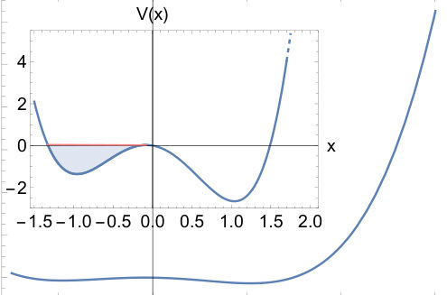
<figcaption class="paper-figure-caption"><b>Fig 1.</b> Figure 1. The potential V (x) used for numerical simulations throughout this manuscript, given by Eq. (8) with parameters: d1 = −0.65, d2 = −8, d4 = 8, and the rest are zero [7]. We used an asymmetric spatial domain x ∈[−1.5, 3.5]. Inset: A focus on low energies, where the structure of the asymmetric double-well is more apparent. A particle is considered to be in the left well (shaded region) for xleft ∈[−1.33, −0.08].</figcaption>
</figure>
<figure class="paper-figure-card">
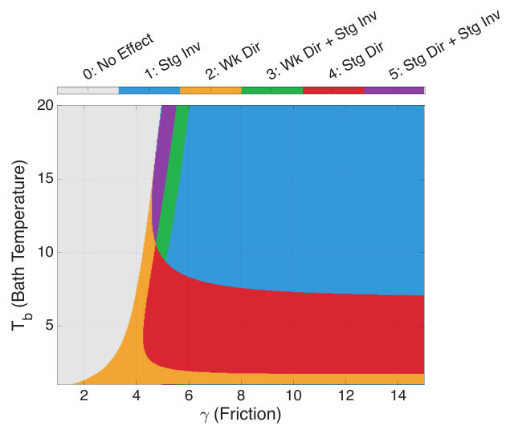
<figcaption class="paper-figure-caption"><b>Fig 2.</b> Figure 2. The ‘Mpemba phases’ diagram of an underdamped asymmetric double-well potential. We present the type of MEs (color) for every set of dissipation γ (x-axis) and bath temperature Tb (y-axis). Given these parameters, the KK operator was discretized, diagonalized, and the coefficient of slow relaxation a2 was evaluated. When the leading nonzero eigenvalue is complex, the corresponding norm of the projection onto the leading 2D eigenspace is used instead. Nonmonotonicity (vanishing) indicates a weak (strong) effect, and a cooling (heating) is referred to as a direct (inverse) effect. Details of the numerics are given in [55]. Relative to the potential (Fig. 1), weak (strong) dissipation...</figcaption>
</figure>
<figure class="paper-figure-card">
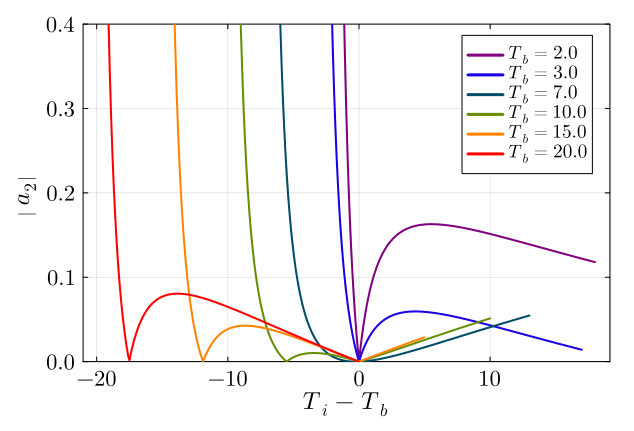
<figcaption class="paper-figure-caption"><b>Fig 3.</b> Figure 3. The normalized coefficient associated with the slow relaxation mode, a2, in the overdamped regime as a function of the initial temperature, shown for different bath temperatures. The figure illustrates the transition between the direct (Tb &lt; 7) and inverse (Tb &gt; 7) Mpemba effects. The discretization scheme used for the corresponding Fokker–Planck operator follows [57].</figcaption>
</figure>
<figure class="paper-figure-card">
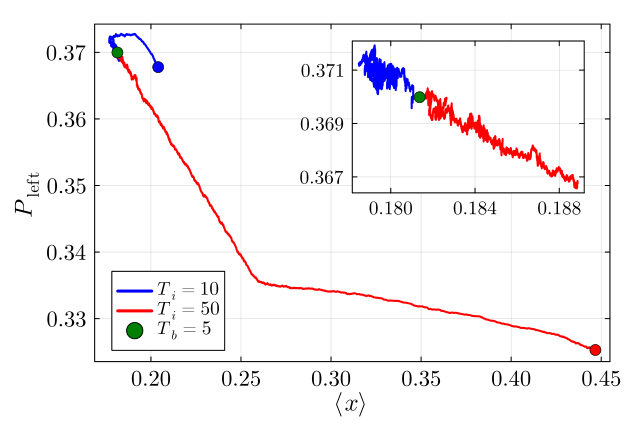
<figcaption class="paper-figure-caption"><b>Fig 4.</b> Figure 4. Cooling under strong dissipation: Relaxation from two different initial temperatures, Ti = 10 (blue) and Ti = 50 (red), toward the bath temperature Tb = 5 (green dot), for a relatively large damping coefficient γ = 10. For clarity, the results are projected onto the ⟨x⟩–Pleft plane. During the late stages of relaxation, shown in the inset, the two states approach the bath from opposite directions, indicating the existence of a strong ME at an intermediate temperature [14]. Further details are provided in the SM [55].</figcaption>
</figure>
<figure class="paper-figure-card">
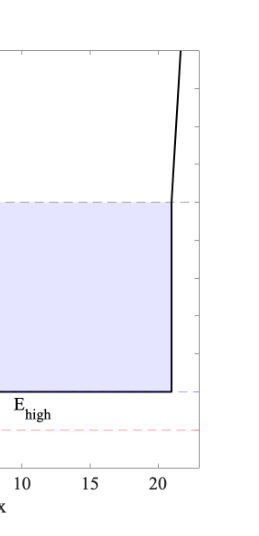
<figcaption class="paper-figure-caption"><b>Fig 5.</b> Figure 5. A double-well potential that has a strong inverse Mpemba effect even in the weak-coupling limit.</figcaption>
</figure>
</div>

<p><strong>Summary.</strong> This paper investigates whether the Mpemba effect—where hot objects cool faster than cold ones—occurs in systems with inertia. By analyzing the Klein-Kramers equation for a Brownian particle, the authors show that while the effect is robustly present in the overdamped limit, its existence in the underdamped regime depends critically on the complexity of the confining potential.</p>
<p><strong>Why it may be interesting.</strong> While focused on classical statistical mechanics, the mathematical machinery involving non-Hermitian operators (KK equation) and spectral analysis is highly relevant to open quantum systems dynamics, particularly when studying relaxation rates or thermalization processes near phase transitions.</p>
<details>
<summary>Detailed structure</summary>
<p><strong>Main problem.</strong> The research extends the Mpemba effect, a counterintuitive cooling phenomenon, from classical overdamped systems to the underdamped regime where inertial effects are significant.</p>
<p><strong>Main result.</strong> The Mpemba effect persists in the underdamped regime for complex potentials (like double-well), although it is absent for simple single-well potentials in the weak damping limit.</p>
<p><strong>Method.</strong> The analysis employs spectral decomposition of the Klein-Kramers equation and uses perturbation theory to expand observables like the overlap coefficient across different damping regimes.</p>
<p><strong>Model / system.</strong> The system modeled is a Brownian particle diffusing in a 1D potential V(x), analyzed using the full dynamics described by Langevin equations and governed by the Klein-Kramers (KK) equation for the probability density function.</p>
<p><strong>Key observables.</strong> The overlap coefficient $a_2(T_i, T_b)$ is the primary diagnostic tool used to determine if the Mpemba effect exists, requiring a nonmonotonic dependence on initial temperature ($T_i$).</p>
<p><strong>Important parameters / regimes.</strong> Damping rate ($\gamma$), bath temperature ($T_b$), and the damping regime (overdamped vs. underdamped).</p>
<p><strong>Assumptions / limitations.</strong> The analysis assumes classical Markovian dynamics, focusing on the long-time relaxation limit of the system.</p>
<p><strong>Figures summary.</strong> Figures illustrate 'Mpemba phases' diagrams showing ME types dependence on damping and bath temperature, and show cooling trajectories demonstrating strong ME behavior in specific regimes.</p>
<p><strong>Paper structure.</strong> The paper progresses by first establishing the problem extension to underdamped dynamics, then developing perturbative methods using spectral decomposition of the KK operator, culminating in deriving expressions for the overlap coefficient that confirm the persistence of the effect.</p>
</details>
<details>
<summary>Abstract</summary>
<p>The Mpemba effect is the counterintuitive phenomenon in which an initially hotter system cools faster than a colder, otherwise identical system. It has been experimentally demonstrated in various classical overdamped systems. Here, we explore the existence of the same effect in a regime where inertia cannot be neglected, namely, the underdamped regime. We consider the underdamped dynamics of a Brownian particle in a potential. We show perturbatively that, if the effect exists in the overdamped limit, it persists for sufficiently large but finite damping. In the ultra-weak-damping limit, we show that the effect cannot occur for smooth confining single-well potentials with canonical initial states, but can arise in more complex potentials. We demonstrate our results numerically using double-well potentials, the canonical setting for the Mpemba effect in the overdamped limit.</p>
</details>
<p><sub><a href="#top">↑ back to top</a></sub></p>

<p><a id="paper-2607.11273"></a></p>
<h3 id="fixed-protocol-amortized-mps-tomography-with-conformalized-predictive-uncertainty"><a href="http://arxiv.org/abs/2607.11273v1">Fixed-Protocol Amortized MPS Tomography with Conformalized Predictive Uncertainty</a></h3>
<p><strong>Authors:</strong> Jian Xu, Delu Zeng, John Paisley, Qibin Zhao<br>
<strong>Type:</strong> both · <strong>Category:</strong> numerical methods · <strong>PDF:</strong> <a href="https://arxiv.org/pdf/2607.11273v1">https://arxiv.org/pdf/2607.11273v1</a><br>
<strong>Analysis basis:</strong> full PDF text, analyzed in chunks
<strong>Topic relevance:</strong> <code>methods for driven-dissipative</code> <strong>3/5</strong> · <code>quantum measurements</code> <strong>3/5</strong> · <code>analog quantum simulation</code> <strong>2/5</strong> · <code>measurement-induced transitions</code> <strong>2/5</strong> · <code>Keldysh / 2PI / non-Gaussian methods</code> <strong>1/5</strong> · <code>QC/QI experiment</code> <strong>1/5</strong> · <code>driven-dissipative phase transition</code> <strong>1/5</strong> · <code>entanglement &amp; information structure</code> <strong>1/5</strong></p>
<div class="figure-strip-hint">↔ Scroll figures horizontally</div>
<div class="paper-figures-scroll">
<figure class="paper-figure-card">
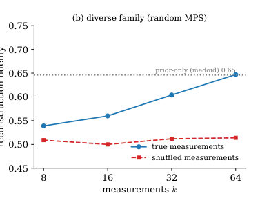
<figcaption class="paper-figure-caption"><b>Fig 1.</b> Figure 3: Integrity controls. (a) On a concentrated family, a k=0 prior-only medoid (0.997) dom- inates and true ≈shuffled: the measurements are not used, so “few-measurement fidelity” is mem- orization. (b) On a diverse family the medoid is far from optimal and true reconstruction separates from shuffled, with the gap growing in the budget k—genuine measurement information. Both con- trols are prerequisites for interpreting any learned-QST fidelity.</figcaption>
</figure>
<figure class="paper-figure-card">
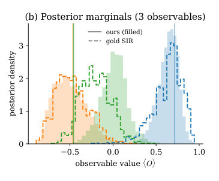
<figcaption class="paper-figure-caption"><b>Fig 2.</b> Figure 4: Approach A targets the intended posterior (n=6). (a) Posterior means of the flow sam- pler vs. a gold-standard SIR posterior, over 25 states and 2n local observables, lie on the diagonal (r=0.98). (b) Example posterior marginals (three observables): the sampler’s draws (filled) overlap the SIR posterior (dashed); vertical lines are the true values. This confirms the generative-prior route is a genuine posterior, not a relabelled point estimate.</figcaption>
</figure>
<figure class="paper-figure-card">
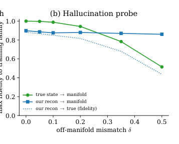
<figcaption class="paper-figure-caption"><b>Fig 3.</b> Figure 5: Out-of-distribution behaviour of Approach A (physical family, n=6). (a) As the true state is pushed off the manifold (mismatch δ), fidelity degrades gracefully. (b) Hallucination probe: the reconstruction stays near the training family (blue) while the true state leaves it (green); the reconstruction’s fidelity to the true state (dotted) declines with δ rather than staying spuriously high.</figcaption>
</figure>
<figure class="paper-figure-card">
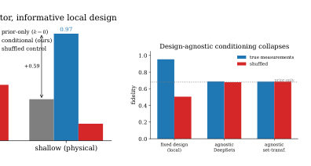
<figcaption class="paper-figure-caption"><b>Fig 4.</b> Figure 6: Left: the measurement design is the lever—informative local Paulis lift fidelity from 0.79 to 0.95 over random Paulis (random family). Middle: headline result—the conditional estimator beats the k=0 prior-only baseline (arrows: +0.27 random, +0.59 shallow) and the shuffled control collapses. Right: making the estimator design-agnostic (training over variable random subsets) collapses it to the family mean (true = shuffled), for both a DeepSets and a set-transformer encoder.</figcaption>
</figure>
<figure class="paper-figure-card">
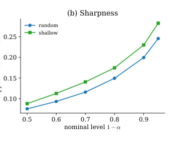
<figcaption class="paper-figure-caption"><b>Fig 5.</b> Figure 7: Calibration of the dropout predictive ensemble over the 2n local Z/X observables (con- formal, E=24 samples, 10 splits). (a) Empirical coverage tracks the nominal level across the range (ideal: diagonal). (b) Interval width stays small (physical range [−1, 1]), because the high-fidelity reconstruction concentrates the predictive ensemble. Raw (uncalibrated) coverage is 69–72% at the 90% level.</figcaption>
</figure>
</div>

<p><strong>Summary.</strong> This paper introduces a novel, fixed-protocol deep learning estimator for Quantum State Tomography using Matrix Product States (MPS). By conditioning the estimation on carefully chosen local Pauli measurements rather than random ones, the method achieves high reconstruction fidelity with limited data. It provides a scalable and hardware-testable framework for characterizing quantum states in complex physical systems.</p>
<p><strong>Why it may be interesting.</strong> This work provides advanced machine learning tools for quantum state reconstruction that are directly applicable to characterizing complex quantum states generated in AMO experiments (e.g., trapped ions or cold atoms) where full tomography is impossible.</p>
<details>
<summary>Detailed structure</summary>
<p><strong>Main problem.</strong> Quantum State Tomography (QST) is sample-starved, requiring an efficient method to estimate unknown quantum states from limited measurement data.</p>
<p><strong>Main result.</strong> A fixed-protocol amortized MPS estimator, conditioned on informative local Pauli measurements, achieves high fidelity ($\approx 0.95$) significantly better than prior-only estimates and scales polynomially with system size.</p>
<p><strong>Method.</strong> The authors propose a direct mapping (amortized estimator) from measured Pauli expectation values to Matrix Product State (MPS) cores, bypassing full posterior sampling while using gauge-invariant loss functions for training.</p>
<p><strong>Model / system.</strong> The focus is on estimating pure quantum states $|\psi
angle$ within an $n$-qubit system, parameterized efficiently using the Matrix Product State (MPS) core representation.</p>
<p><strong>Key observables.</strong> Fidelity ($    ext{fid}$), reconstruction intervals (coverage), and measurement gain over prior-only estimates.</p>
<p><strong>Important parameters / regimes.</strong> System size ($n$, up to 20 qubits), bond dimension ($\chi$), and the set of measured local Pauli operators.</p>
<p><strong>Assumptions / limitations.</strong> The performance relies heavily on designing informative, local Pauli measurements rather than random ones; the conformal calibration provides marginal coverage but not necessarily simultaneous coverage for all observables.</p>
<p><strong>Figures summary.</strong> Figures illustrate the workflow from structured state families and informative Paulis to MPS cores, showing reconstruction estimates and calibrated uncertainty intervals. Tables compare fidelity gains across varying shot budgets and against classical baselines.</p>
<p><strong>Paper structure.</strong> The paper establishes the QST challenge, compares generative prior methods (Approach A) with a novel fixed-protocol direct estimator (Approach B), details the measurement design using local Paulis, validates performance via ablation studies, and concludes with hardware testing on IBM devices.</p>
</details>
<details>
<summary>Abstract</summary>
<p>Quantum state tomography is sample-starved, and the states one prepares live on a narrow, learnable manifold. A $k{=}0$ prior-only control shows that on concentrated families a prior estimate is already near-optimal, so ``high fidelity at few measurements'' can be family memorization rather than tomography; genuine measurement-efficiency needs a model that conditions on the measurements and demonstrably uses them. On a shared matrix-product-state (MPS) core parameterization we study two routes. Approach~A learns a generative prior over MPS cores with measurement-guided posterior inference (gold-standard-validated, but whose few-measurement accuracy the control shows is largely the prior). Approach~B, our main proposal, is a \emph{fixed-protocol amortized} MPS estimator trained once with a gauge-invariant fidelity loss; we deliberately do not rest it on a permutation-invariant set encoder (a plain MLP matches it). The decisive lever is the measurement design: motivated by the fact that local reduced density matrices determine a $χ$-MPS, conditioning on an \emph{informative local} Pauli set rather than random strings turns a modest, memorization-prone estimator into a high-fidelity one ($\approx\!0.95$, up to $+0.59$ over prior-only, decisively passing a shuffled-measurement control). A dropout ensemble, conformally recalibrated, gives $\approx\!90\%$-coverage intervals -- including for observables never measured, where a shot-based interval does not exist. Quality holds as the system grows (fidelity $0.90$ at $n{=}10$, gain \emph{growing} in $n$; $0.88$ at bond dimension $χ{=}4$), the parameterization is polynomial (native contraction to $20$ qubits), and we close the loop on IBM hardware ($5$ states at $0.97$ from hardware-measured Paulis).</p>
</details>
<p><sub><a href="#top">↑ back to top</a></sub></p>

<p><a id="paper-2607.10360"></a></p>
<h3 id="gram-certified-resource-continuation-for-structured-quantum-representation-audits"><a href="http://arxiv.org/abs/2607.10360v1">Gram-Certified Resource Continuation for Structured Quantum Representation Audits</a></h3>
<p><strong>Authors:</strong> Azadeh Alavi, Fatemeh Kouchmeshki, Hossein Akhoundi, Abdolrahman Alavi<br>
<strong>Type:</strong> theory · <strong>Category:</strong> numerical methods · <strong>PDF:</strong> <a href="https://arxiv.org/pdf/2607.10360v1">https://arxiv.org/pdf/2607.10360v1</a><br>
<strong>Analysis basis:</strong> full PDF text, analyzed in chunks
<strong>Topic relevance:</strong> <code>analog quantum simulation</code> <strong>3/5</strong> · <code>methods for driven-dissipative</code> <strong>3/5</strong> · <code>entanglement &amp; information structure</code> <strong>2/5</strong> · <code>non-equilibrium dynamics</code> <strong>2/5</strong> · <code>Keldysh / 2PI / non-Gaussian methods</code> <strong>1/5</strong> · <code>correlated / nonlocal dissipation</code> <strong>1/5</strong> · <code>correlated cavity matter</code> <strong>1/5</strong> · <code>driven-dissipative phase transition</code> <strong>1/5</strong></p>
<div class="figure-strip-hint">↔ Scroll figures horizontally</div>
<div class="paper-figures-scroll">
<figure class="paper-figure-card">
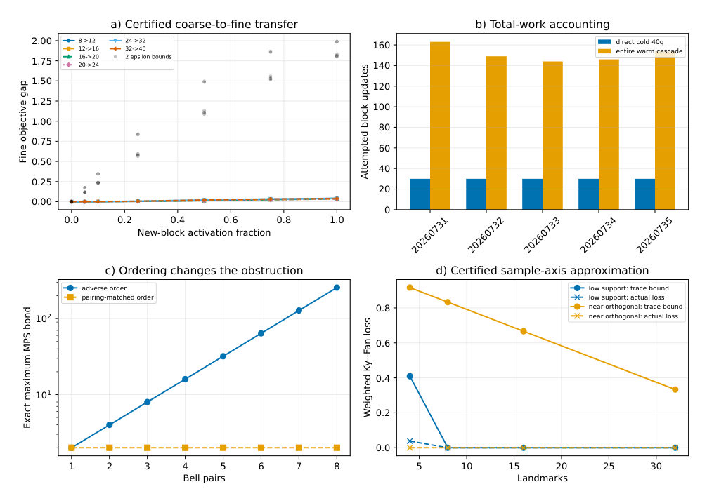
<figcaption class="paper-figure-caption"><b>Fig 1.</b> Figure 1: Executed structured synthetic controls. a, transferred-flag objective gaps and their 2ε bounds. b, complete cascade work versus a direct cold 40-qubit fit. c, exact matrix-product-state (MPS) bond dependence on Bell-pair ordering. d, landmark losses and residual-trace bounds in favorable and unfavorable support regimes</figcaption>
</figure>
</div>

<p><strong>Summary.</strong> This paper introduces Gram-certified resource continuation methods to rigorously audit approximations in large-scale quantum state simulations. It develops mathematical diagnostics based on amplitude overlaps to quantify the error incurred when moving from low-resource (coarse) models to high-resource (fine) ones. The work provides necessary conditions for 'warm starting' complex quantum computations, highlighting both theoretical guarantees and practical computational pitfalls.</p>
<p><strong>Why it may be interesting.</strong> For AMO/open quantum systems, this provides rigorous tools to assess the validity of using low-rank or truncated representations (like MPS/TT) when simulating complex dynamics, offering a mathematical audit beyond simple convergence checks.</p>
<details>
<summary>Detailed structure</summary>
<p><strong>Main problem.</strong> The core problem is determining when an approximation or solution obtained using a computationally cheaper resource model remains mathematically justified as an initialization for a more complex, richer quantum representation.</p>
<p><strong>Main result.</strong> The authors provide rigorous bounds and certificates (Gram-certified continuation) showing that the suboptimality gap between coarse and fine representations can be quantified, though complete cascade transfers often incur prohibitive computational costs without objective improvement.</p>
<p><strong>Method.</strong> They develop mathematical diagnostics using amplitude overlaps to construct Gram matrices, allowing for the comparison of spectral properties between lifted coarse density operators and true fine density operators without full materialization.</p>
<p><strong>Model / system.</strong> The work focuses on structured quantum representation workloads involving $n$-qubit pure states, which are too large to store densely. The structure is modeled using nested projectors (flags) connecting 'coarse' approximations to 'fine' ones, often related to Tensor Network or Matrix Product State structures.</p>
<p><strong>Key observables.</strong> Signed spectrum of the difference between fine and lifted coarse densities; suboptimality measures ($\delta_c, \delta_f$); Gram matrix overlaps ($B$).</p>
<p><strong>Important parameters / regimes.</strong> Qubit number ($n$), Schmidt rank ceiling ($\chi$), resource costs (e.g., bond dimension changes), and empirical trace distance ($\varepsilon$).</p>
<p><strong>Assumptions / limitations.</strong> The results are based on deterministic, noise-free classical simulations; the continuation is not guaranteed to overcome fundamental physical limits like the final Schmidt-rank ceiling.</p>
<p><strong>Figures summary.</strong> Not specified in detail, but references suggest comparisons between various partitionings (canonical vs. pair-balanced) and resource scaling across qubit ladders.</p>
<p><strong>Paper structure.</strong> The paper builds a hierarchy of mathematical certificates ($\epsilon, \zeta$) to quantify the relationship between approximations at different levels of resource parametrization, culminating in practical tests for 'warm starting' optimization procedures.</p>
</details>
<details>
<summary>Abstract</summary>
<p>Dense representation of an $n$-qubit pure state requires $2^n$ complex amplitudes, precluding dense classical materialization at large $n$. We develop Gram-certified resource continuation for structured quantum-representation workloads and ask when a solution obtained under a lower-cost resource model remains a justified initialization for a richer one. For coarse and fine state ensembles connected by a declared isometry, fine, coarse, and cross complex amplitude overlaps form a positive-semidefinite block Gram matrix. A signed operator of dimension at most twice the sample count has the nonzero signed spectrum of the fine density minus the lifted coarse density, yielding trace- and operator-norm diagnostics without constructing either density operator. We prove that a coarse weighted spectral flag with objective suboptimality $δ_c$ has fine-level suboptimality at most $δ_c+2\varepsilon$, where $\varepsilon$ is the empirical trace distance; the factor two is attainable. We distinguish encoder change from exact feasible-family prolongation, give a gap-dependent subspace-stability test, and show that continuation cannot overcome a final Schmidt-rank ceiling. In deterministic synthetic controls over an 8-to-40-qubit ladder, exact ancilla lifts agree to numerical precision. Transferred initialization reduces final-rung block updates from 30 to 20, but the complete cascade costs $4.80$--$5.43$ times a direct final-rung solve, without material objective improvement. Reordering eight Bell pairs reduces the maximum matrix-product-state bond from 256 to 2. Thus continuation is justified only when cross-rung mismatch, feasible-family inclusion, topology, and total work jointly satisfy prespecified audits. These noise-free classical results neither establish generic 40-qubit simulability nor claim hardware performance or quantum advantage.</p>
</details>
<p><sub><a href="#top">↑ back to top</a></sub></p>

<p><a id="paper-2607.11755"></a></p>
<h3 id="a-fokker-planck-approach-to-a-stochastic-multiplicative-wealth-model-with-taxation-and-redistribution"><a href="http://arxiv.org/abs/2607.11755v1">A Fokker-Planck approach to a stochastic multiplicative wealth model with taxation and redistribution</a></h3>
<p><strong>Authors:</strong> Iago Nascimento Barros, Marcelo Lobato Martins, Celia Anteneodo<br>
<strong>Type:</strong> theory · <strong>Category:</strong> statistical mechanics · <strong>PDF:</strong> <a href="https://arxiv.org/pdf/2607.11755v1">https://arxiv.org/pdf/2607.11755v1</a><br>
<strong>Analysis basis:</strong> full PDF text, analyzed in chunks
<strong>Topic relevance:</strong> <code>non-equilibrium dynamics</code> <strong>3/5</strong> · <code>non-equilibrium universality</code> <strong>3/5</strong> · <code>driven-dissipative phase transition</code> <strong>2/5</strong> · <code>methods for driven-dissipative</code> <strong>2/5</strong> · <code>Keldysh / 2PI / non-Gaussian methods</code> <strong>1/5</strong> · <code>analog quantum simulation</code> <strong>1/5</strong> · <code>correlated / nonlocal dissipation</code> <strong>1/5</strong></p>
<div class="figure-strip-hint">↔ Scroll figures horizontally</div>
<div class="paper-figures-scroll">
<figure class="paper-figure-card">
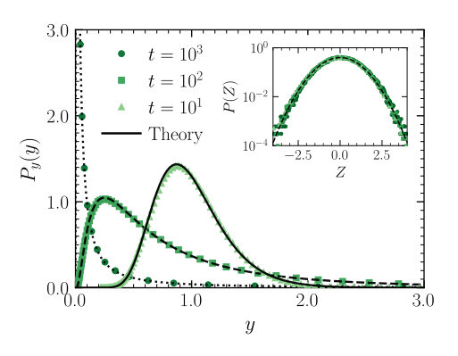
<figcaption class="paper-figure-caption"><b>Fig 1.</b> FIG. 1. Probability density of the rescaled wealth y = W/⟨W⟩ at different times t, indicated in the legend. Symbols corre- spond to simulation results at each time t. Lines correspond to the theoretical predictions derived from Eq. (11). Inset: data collapse in terms of the standardized log-wealth variable Z. Parameter values are A = 0.01 and D ≃4.53 × 10−3.</figcaption>
</figure>
<figure class="paper-figure-card">
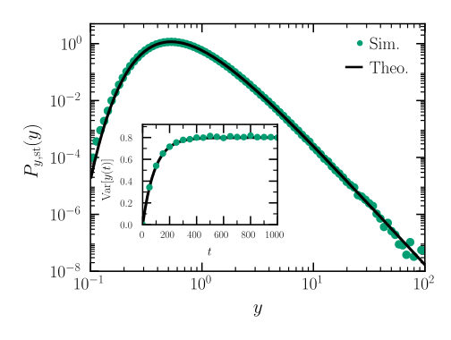
<figcaption class="paper-figure-caption"><b>Fig 2.</b> FIG. 2. Stationary PDF Py(y) of the mean-normalized wealth y for the uniform redistribution scheme. Symbols de- note results from simulations, while the solid line shows the corresponding theoretical prediction given by Eq. (34). Pa- rameter values are A = 0.01 and D ≃4.53 × 10−3, hence α = 2.25. Then, the tail decays approximately as a power law with exponent 4.25. Inset: time evolution of the variance Var[y(t)] compared with the theoretical relaxation given by Eq. (39).</figcaption>
</figure>
<figure class="paper-figure-card">
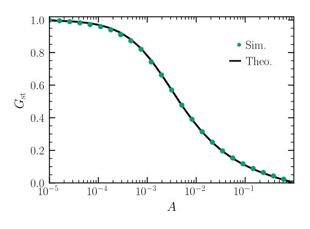
<figcaption class="paper-figure-caption"><b>Fig 3.</b> FIG. 3. Stationary Gini coefficient for uniform redistribution as a function of A. Symbols denote simulations, while the solid line is the analytical prediction given by Eq. (42). The decrease of Gst with A reflects the increasing strength of the redistributive restoring drift relative to multiplicative noise, with D ≃4.53 × 10−3.</figcaption>
</figure>
<figure class="paper-figure-card">
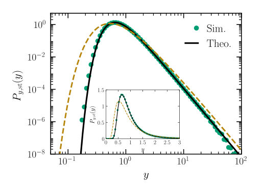
<figcaption class="paper-figure-caption"><b>Fig 4.</b> FIG. 4. Stationary PDF of the mean-normalized wealth y for the nonuniform redistribution scheme given by Eq. (44). Symbols denote the result of simulations at t = 104 steps, the solid line is the theoretical prediction given by Eq. (45) with normalization in Eq. (48). For comparison, the light dashed line shows the theoretical prediction for the uniform redistribution case, given by Eq. (34). The inset shows the same plots in linear scales. The parameter values are A = 0.01, D ≃4.53×10−3 (hence α ≃2.25), β = 103 and yc = 0.1.</figcaption>
</figure>
<figure class="paper-figure-card">
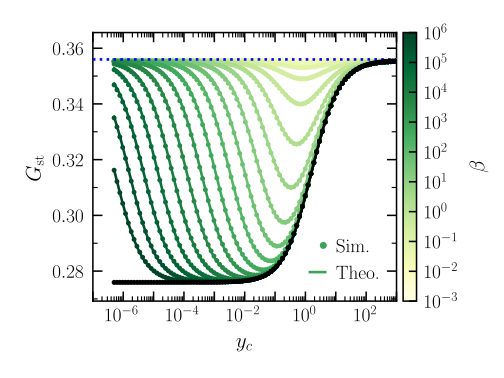
<figcaption class="paper-figure-caption"><b>Fig 5.</b> FIG. 5. Continuous nonuniform redistribution. Sta- tionary Gini coefficient as a function of the redistribution scale yc for different values of the policy parameter β, with A = 0.01. Symbols denote simulations, while the solid lines represent the corresponding theoretical prediction from Eq. (45) substituted into Eq. (32), in excellent agreement. The black line and symbols correspond to the limiting case β →∞(i.e., ϕ(y) = 1/[1+y/yc]). The horizontal dotted blue line indicates the value of the Gini coefficient for the uni- form redistribution kernel. Simulations were performed for N = 104 agents, and recorded at t = 104 steps.</figcaption>
</figure>
</div>

<p><strong>Summary.</strong> This paper applies statistical physics tools, specifically Fokker-Planck equations, to analyze how wealth inequality evolves in an economy subject to taxes and redistribution. By comparing uniform versus nonuniform transfer protocols, the authors demonstrate that targeted redistribution can effectively stabilize the system and reduce measured economic disparities like the Gini index.</p>
<p><strong>Why it may be interesting.</strong> While purely economic, the mathematical framework—using FPEs, stochastic processes, and steady-state analysis to model non-equilibrium distributions—is highly analogous to modeling energy or particle density in complex many-body systems far from equilibrium.</p>
<details>
<summary>Detailed structure</summary>
<p><strong>Main problem.</strong> The study develops a Fokker-Planck description for wealth distribution dynamics under stochastic multiplicative growth, incorporating taxation and general redistribution protocols.</p>
<p><strong>Main result.</strong> Nonuniform redistribution schemes can significantly mitigate wealth disparities by stabilizing the stationary state compared to simple uniform models. The analysis suggests statistical properties might exhibit universality despite specific policy details.</p>
<p><strong>Method.</strong> The authors use continuous-time limits derived from discrete stochastic processes, leading to Fokker-Planck Equations (FPEs) for the probability density function of rescaled wealth.</p>
<p><strong>Model / system.</strong> The model describes a population's wealth evolution ($W_{i,t}$) through multiplicative noise, taxation ($ au$), and state-dependent redistribution ($   ext{r}_{i,t}$). The analysis focuses on the rescaled wealth $y_t$ governed by an associated SDE/FPE.</p>
<p><strong>Key observables.</strong> Gini index (measure of inequality), stationary wealth distribution $P_{y,st}(y)$, and moments $\langle y^n 
angle$.</p>
<p><strong>Important parameters / regimes.</strong> Taxation rate ($    au$), noise strength ($s$), redistribution parameters ($eta$, $y_c$), and the exponent $\alpha$ governing the tail behavior.</p>
<p><strong>Assumptions / limitations.</strong> The analysis relies on mean-field closure for large populations ($N 	o \infty$) and assumes specific functional forms for redistribution kernels (e.g., uniform or CCT limit).</p>
<p><strong>Figures summary.</strong> Figures compare simulated and theoretical stationary PDFs for uniform redistribution, showing agreement, and illustrate the relaxation of variance over time.</p>
<p><strong>Paper structure.</strong> The paper progresses from deriving the general Fokker-Planck equation for wealth dynamics to analyzing specific cases (uniform vs. nonuniform redistribution). It derives analytical forms for the stationary PDF and calculates inequality metrics like the Gini index for comparison.</p>
</details>
<details>
<summary>Abstract</summary>
<p>We develop a Fokker-Planck description of the dynamics of wealth distribution in a stochastic multiplicative economic growth model with taxation and redistribution, as introduced by P.M.C. de Oliveira. Extending the original formulation, our theoretical framework includes general redistribution protocols, encompassing a broad class of state-dependent transfer mechanisms. As a particular case, we investigate a two-state protocol designed to emulate conditional cash transfer programs. Analytical expressions for the stationary wealth distributions are derived, revealing how the interplay between multiplicative noise, taxation, and redistribution shapes the emergence of inequality. The theoretical results are corroborated by agent-based simulations. To quantify and compare the impact of the different protocols, we employ the Gini index as a measure of inequality. Our analysis highlights how specific nonuniform redistribution schemes can significantly mitigate wealth disparities.</p>
</details>
<p><sub><a href="#top">↑ back to top</a></sub></p>

<p><a id="paper-2607.10921"></a></p>
<h3 id="krylov-complexity-from-loschmidt-amplitude"><a href="http://arxiv.org/abs/2607.10921v1">Krylov Complexity from Loschmidt Amplitude</a></h3>
<p><strong>Authors:</strong> Debarghya Chakraborty<br>
<strong>Type:</strong> theory · <strong>Category:</strong> statistical mechanics · <strong>PDF:</strong> <a href="https://arxiv.org/pdf/2607.10921v1">https://arxiv.org/pdf/2607.10921v1</a><br>
<strong>Analysis basis:</strong> full PDF text, analyzed in chunks
<strong>Topic relevance:</strong> <code>entanglement &amp; information structure</code> <strong>3/5</strong> · <code>non-equilibrium dynamics</code> <strong>3/5</strong> · <code>non-equilibrium universality</code> <strong>2/5</strong> · <code>Keldysh / 2PI / non-Gaussian methods</code> <strong>1/5</strong> · <code>analog quantum simulation</code> <strong>1/5</strong> · <code>correlated / nonlocal dissipation</code> <strong>1/5</strong> · <code>driven-dissipative phase transition</code> <strong>1/5</strong> · <code>methods for driven-dissipative</code> <strong>1/5</strong></p>
<div class="figure-strip-hint">↔ Scroll figures horizontally</div>
<div class="paper-figures-scroll">
<figure class="paper-figure-card">
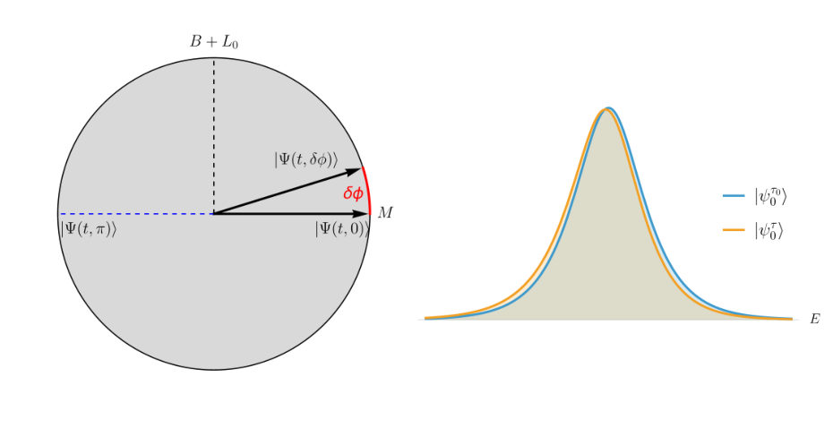
<figcaption class="paper-figure-caption"><b>Fig 1.</b> FIG. 1: Visual guide: (Left) Krylov complexity is the rate of change in overlap between two trajectories that move apart in time. The horizontal arrow depicts the physical trajectory and the slanted one describes evolution with the δϕ-deformed Hamiltonian. At ϕ = π/2, the ϕ-evolved Hamiltonian becomes B + L0. Complexity is bounded by the volume of this disc at time t with a canonical choice of volume element. When autocorrelation is real, the relation |Ψ(t, π)⟩= |Ψ(−t, 0)⟩leads to stronger results. (Right) B generates rotations of the Krylov basis on using Euclidean- evolved |ψτ 0⟩= e−(τ−τ0)H |ψτ0 0 ⟩as initial state for Lanczos algorithm. This allows rewriting the time-derivative of...</figcaption>
</figure>
<figure class="paper-figure-card">
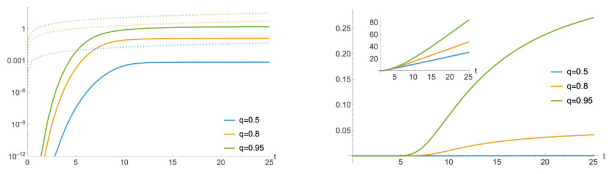
<figcaption class="paper-figure-caption"><b>Fig 2.</b> FIG. 2: Approximating Krylov complexity from truncation (40) with n∗= 10. (a) The difference δ(n∗, t) computed using DSSYK Lanczos coefficients (D4) for varying q. The dotted lines indicate the worst case error R(n∗)t = en∗log qt for the corresponding q. (b) The normalized difference 1 ⟨ˆn(t)⟩( R t 0 δ(n∗, s)ds), with the inset showing overall scale of ⟨ˆn(t)⟩for reference. A finite τ = 10−6 was used.</figcaption>
</figure>
<figure class="paper-figure-card">
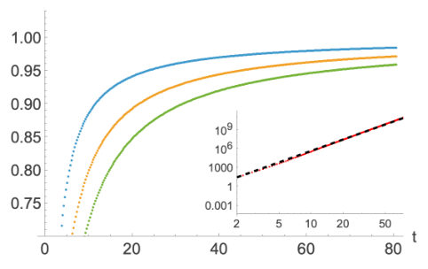
<figcaption class="paper-figure-caption"><b>Fig 3.</b> FIG. 3: (a) RMT complexity distribution: ˆnk(t) for bn = 1</figcaption>
</figure>
<figure class="paper-figure-card">
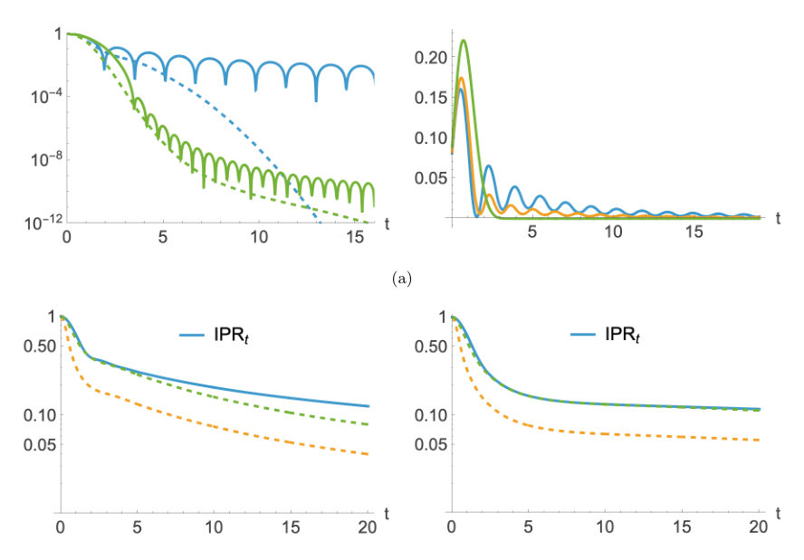
<figcaption class="paper-figure-caption"><b>Fig 4.</b> FIG. 4: (a) Integrated form of bound (61) in DSSYK The left panel shows |C(2t)| (solid lines) for q = 0 (blue) and q = 0.8 (green). The dashed lines of same colors are the rhs of (61) computed using Lanczos coefficients. (61) is satisfied away from where C(2t) dips to 0. The right panel shows the difference smeared over a δt window: R t+δt t [|C(2s)|−exp  (∆n(s))2π2/2  ]ds, with δt = 0.8 for q = 0 (blue), q = 0.2 (orange) and q = 0.8 (green). (b) IPRt in DSSYK for q = 0 (left) and q = 0.8 (right), along with rhs of (63) (orange) and (64) (green) computed using ∆n(t).</figcaption>
</figure>
<figure class="paper-figure-card">
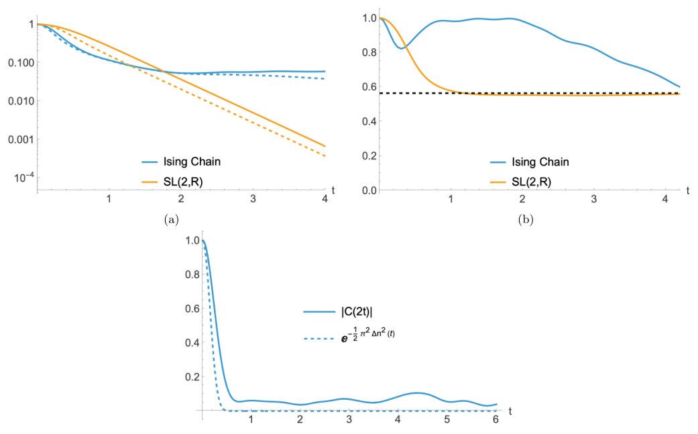
<figcaption class="paper-figure-caption"><b>Fig 5.</b> FIG. 5: (a) IPRt compared with analytic prediction the numerically calculated IPRt (solid lines) compared against the corresponding (64) in dashed lines of same colors. (b) Ratio of the prediction with IPRt: The combination erf(π∆n(t))/(2√π∆n(t)IPRt) for the same systems. The dashed black line is the analytical prediction given by inverse of (C33). Details of the systems The Ising chain is specified by the Hamiltonian (D6) and C(t) is the infinite temperature autocorrelation function (7) of the initial operator σz 3. The SL(2, R) toy model (orange) is specified by the Lanczos coefficients (C20), where both the bn and an coefficients have been perturbed by independent positive random...</figcaption>
</figure>
</div>

<p><strong>Summary.</strong> This theoretical work develops a novel framework connecting Krylov complexity, a measure of quantum chaotic spreading, directly to the Loschmidt amplitude. By parameterizing this relationship using an angular variable $\phi$, the authors derive geometric bounds and explicit time evolution equations for complexity moments across various physical models like SU(2) and SYK. It provides a unified mathematical language for studying quantum dynamics in terms of spectral geometry.</p>
<p><strong>Why it may be interesting.</strong> The deep connection drawn between quantum chaos diagnostics (Krylov complexity) and fundamental quantities like the Loschmidt amplitude provides powerful tools for characterizing non-equilibrium dynamics in many-body systems relevant to condensed matter physics.</p>
<details>
<summary>Detailed structure</summary>
<p><strong>Main problem.</strong> The paper aims to relate Krylov complexity, a diagnostic for quantum dynamics, to the Loschmidt amplitude by establishing an analytical framework based on geometric and algebraic properties.</p>
<p><strong>Main result.</strong> Krylov complexity is shown to be expressible as a derivative of the Loschmidt amplitude parameterized by an angular variable $\phi$, leading to bounds related to the volume of the $t-\phi$ geometry.</p>
<p><strong>Method.</strong> The analysis employs geometric methods (Riemannian metrics on $t-\phi$ space) and algebraic techniques involving spectral propagators derived from the Lanczos recursion method.</p>
<p><strong>Model / system.</strong> The study analyzes general quantum dynamics, utilizing the Krylov basis constructed via the Lanczos algorithm. Specific models explored include SU(2), SL(2, R), Heisenberg Algebra, and the SYK model in various limits.</p>
<p><strong>Key observables.</strong> Krylov Complexity, Loschmidt Amplitude, Spectral Propagator, Mean complexity $\langle\hat{n}(t)
angle$, and Variance $(\Delta n(t))^2$.</p>
<p><strong>Important parameters / regimes.</strong> Angular variable $\phi$, time $t$, Euclidean time $    au$, and system-specific parameters like $\alpha$ and $\gamma$ for the algebraic models.</p>
<p><strong>Assumptions / limitations.</strong> The analysis relies on approximations for the spectral propagator, particularly assuming mild regularity conditions on the spectral function support.</p>
<p><strong>Figures summary.</strong> Figures illustrate Krylov complexity as the rate of change in overlap between separating trajectories ($\phi=0$ vs $\delta\phi$-deformed) and show how an operator $B$ generates basis rotations using Euclidean-evolved states.</p>
<p><strong>Paper structure.</strong> The paper develops the connection by first relating complexity to the Loschmidt amplitude via differentiation w.r.t. $\phi$. It then analyzes the time derivative using a distinct Loschmidt amplitude in Euclidean time $    au$, leading to classification schemes based on perturbation growth, and finally applies this framework to specific algebraic models (SU(2), SL(2, R)) to derive explicit evolution equations for complexity moments.</p>
</details>
<details>
<summary>Abstract</summary>
<p>Krylov complexity is a powerful diagnostic of quantum dynamics, with clear connections to other measures of quantum chaos and operator growth. One such measure is the Loschmidt amplitude, defined as the overlap of initially identical states evolved under two slightly different Hamiltonians. Its decay in certain systems is controlled by the classical Lyapunov exponent. Using the algebraic properties of the Krylov complexity operator, we express Krylov complexity as the derivative of a Loschmidt amplitude whose perturbation is parameterized by an angular variable $φ$. This formulation allows us to define a spectral propagator that encodes the entire complexity distribution, which we characterize for specific types of systems. We study the two-dimensional quantum geometry spanned by time and $φ$ where the original and deformed trajectories reside, demonstrating that Krylov complexity is upper-bounded by its volume. We also express the time derivative of Krylov complexity in terms of a distinct Loschmidt amplitude. Depending on the growth of the Lanczos coefficients, the perturbation term in this amplitude can be truncated. We propose that the strength of this perturbation provides a classification scheme for Krylov complexity dynamics and relate it to the $φ$-derivative of the spectral propagator. Using this analytical framework, we derive general relations between the time-dependence of the survival amplitude and Krylov space measures.</p>
</details>
<p><sub><a href="#top">↑ back to top</a></sub></p>

<p><a id="paper-2607.11708"></a></p>
<h3 id="near-optimal-mode-scaling-for-finite-dimensional-boson-sampling-via-lie-algebraic-leakage-bounds"><a href="http://arxiv.org/abs/2607.11708v1">Near-Optimal Mode Scaling for Finite-Dimensional Boson Sampling via Lie-Algebraic Leakage Bounds</a></h3>
<p><strong>Authors:</strong> Chon-Fai Kam, En-Jui Kuo<br>
<strong>Type:</strong> theory · <strong>Category:</strong> quantum information and computing · <strong>PDF:</strong> <a href="https://arxiv.org/pdf/2607.11708v1">https://arxiv.org/pdf/2607.11708v1</a><br>
<strong>Analysis basis:</strong> full PDF text, analyzed in chunks
<strong>Topic relevance:</strong> <code>analog quantum simulation</code> <strong>3/5</strong> · <code>correlated / nonlocal dissipation</code> <strong>2/5</strong> · <code>entanglement &amp; information structure</code> <strong>2/5</strong> · <code>Keldysh / 2PI / non-Gaussian methods</code> <strong>1/5</strong> · <code>Tavis-Cummings &amp; cavity-many-emitter</code> <strong>1/5</strong> · <code>correlated cavity matter</code> <strong>1/5</strong> · <code>driven-dissipative phase transition</code> <strong>1/5</strong> · <code>methods for driven-dissipative</code> <strong>1/5</strong> · <code>non-equilibrium dynamics</code> <strong>1/5</strong></p>
<div class="figure-strip-hint">↔ Scroll figures horizontally</div>
<div class="paper-figures-scroll">
<figure class="paper-figure-card">
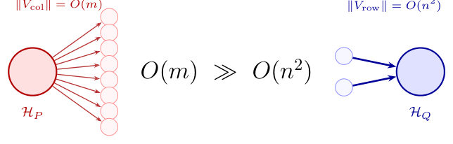
<figcaption class="paper-figure-caption"><b>Fig 1.</b> FIG. 1. Sketch of the proof of Theorem 2: the bunching-leakage mechanism and the variance asymmetry behind it. (a) n excitations injected into distinct modes populate the collision-free sector HQ (occupation ≤d −1; drawn at d = 2). (b) A single action of HLie hops one excitation onto an occupied site, forming a d-fold bunch and entering the single-bunch error sector HP. (c) The leakage map QHLieP : HP →HQ has a strongly asymmetric bipartite support: an HP configuration scatters into O(m) empty modes (out-degree O(m), hence ∥Vcol∥= O(m)), whereas an HQ configuration is reached from only O(n2) collision-forming pairings (in-degree O(n2), hence ∥Vrow∥= O(n2)). The dilute dominance O(m) ≫O(n2)...</figcaption>
</figure>
<figure class="paper-figure-card">
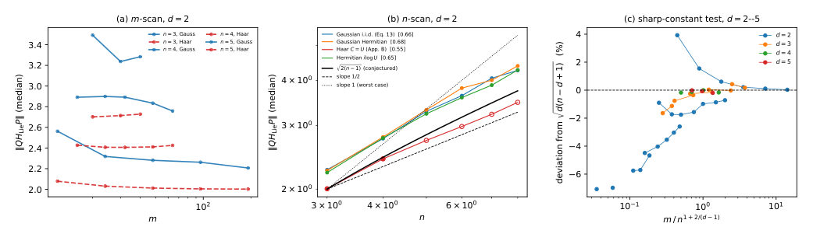
<figcaption class="paper-figure-caption"><b>Fig 2.</b> FIG. 2. Numerical verification of the leakage bound. (a) Median leakage norm against mode number m at fixed n (d = 2): the Haar-ensemble norm (dashed) is nearly m-independent and tightly concentrated, while the Gaussian model (solid) drifts toward it from above. (b) Median norm against particle number n (d = 2, log-log) for all four coupling ensembles; guide lines show slope 1/2 (Theorem 2) and slope 1 (the worst-case estimate of Ref. [14]); the black curve is the conjectured sharp asymptotic √d(n −d + 1) of Eq. (31). Open markers denote sub- dilute Haar points (m &lt; 2n2), which fall below the dilute-limit curve, in the direction that strengthens the bound. (c) Relative deviation of the Haar...</figcaption>
</figure>
</div>

<p><strong>Summary.</strong> This work develops a mathematical framework to determine the minimum number of optical modes required to simulate hard-to-solve problems like Boson Sampling when using matter-based systems with limited local capacity. By analyzing leakage channels through Lie algebra techniques, the authors establish a near-optimal scaling law for resource requirements, which is crucial for experimental feasibility.</p>
<p><strong>Why it may be interesting.</strong> It provides concrete, mathematically rigorous resource estimates for realizing quantum advantage protocols like Boson Sampling in realistic, finite physical hardware architectures (like superconducting circuits or cavity QED).</p>
<details>
<summary>Detailed structure</summary>
<p><strong>Main problem.</strong> The paper addresses quantifying the resource cost (mode scaling) required to maintain the quantum computational hardness of Boson Sampling when implemented on physical platforms with finite local Hilbert spaces.</p>
<p><strong>Main result.</strong> It derives a near-optimal mode requirement $m = 	ilde{\Omega}(n^{1 + 2/(d-1)})$, significantly improving prior bounds and showing that for spin-1 systems ($d=3$), the scaling drops to $m=	ilde{\Omega}(n^2)$.</p>
<p><strong>Method.</strong> The analysis uses a unified framework based on Lie algebras, bounding leakage channels via Dyson-series analysis and non-commutative concentration inequalities.</p>
<p><strong>Model / system.</strong> The system models Boson Sampling transitioning from infinite photonic Fock space to finite-dimensional local Hilbert spaces of dimension $d$, constrained by physical interactions (e.g., Bose-Hubbard model).</p>
<p><strong>Key observables.</strong> Leakage operator spectral norm, transition amplitudes related to the immanant, and the required number of modes ($m$).</p>
<p><strong>Important parameters / regimes.</strong> Particle number ($n$), local dimension ($d$), and mode number ($m$); scaling exponents are critical.</p>
<p><strong>Assumptions / limitations.</strong> The primary proof relies on approximating the leakage bound using a Gaussian model; transferring to the physical Haar ensemble requires verifying Conjecture 1, which is unproven.</p>
<p><strong>Figures summary.</strong> The notes describe quantitative comparisons of scaling bounds (Table I) and numerical validation of norms between Gaussian and Haar ensembles (Table II).</p>
<p><strong>Paper structure.</strong> The paper establishes a unified algebraic framework for non-interacting sampling on Lie groups, derives the leakage bound using advanced concentration inequalities, determines the resulting optimal mode scaling law, and finally compares this result against previous theoretical bounds.</p>
</details>
<details>
<summary>Abstract</summary>
<p>Boson sampling demonstrates quantum advantage through the interference of indistinguishable particles, with output probabilities governed by matrix permanents. Realizing it on deterministic, matter-based platforms requires encoding the bosonic modes in finite-dimensional local Hilbert spaces, which introduces a leakage channel absent in linear optics: multi-particle bunching beyond the local truncation $d$. We develop a unified framework for non-interacting sampling on the irreducible representations of compact Lie groups, in which the transition amplitude is the immanant of a submatrix of the single-particle transition matrix, recovering the permanent in the bosonic case. Within this framework we bound the bunching leakage through a Dyson-series analysis: decomposing the correlated many-body leakage operator into independent random matrices and applying non-commutative concentration inequalities, we prove, in a Gaussian model of the transition matrix, that its spectral norm concentrates at $\tilde{O}(\sqrt{n})$ rather than the $O(n)$ worst-case of prior spin-based emulations; the passage to the physical Haar ensemble is reduced to a single submatrix-comparison input, verified at leading order. Exact numerics across local dimensions $d=2$--$5$ indicate that the bound is tight, the Haar-ensemble norm matching the closed form $\sqrt{d(n-d+1)}$ to sub-percent accuracy. This tightens the required mode number from $m=Ω(n^4)$ to the near-optimal $m=\tildeΩ(n^{1+2/(d-1)})$; for a spin-1 representation ($d=3$) the overhead falls to $m=\tildeΩ(n^2)$, matching the collision-free threshold. The result is independent of particle statistics and applies across finite-dimensional Lie-symmetric architectures, quantifying the spatial resources needed to preserve sampling hardness.</p>
</details>
<p><sub><a href="#top">↑ back to top</a></sub></p>

<p><a id="paper-2607.11234"></a></p>
<h3 id="which-classicality-incidence-simplex-and-product-rule-tests-in-finite-quantum-logics"><a href="http://arxiv.org/abs/2607.11234v1">Which Classicality? Incidence, Simplex, and Product-Rule Tests in Finite Quantum Logics</a></h3>
<p><strong>Authors:</strong> Karl Svozil<br>
<strong>Type:</strong> theory · <strong>Category:</strong> other · <strong>PDF:</strong> <a href="https://arxiv.org/pdf/2607.11234v1">https://arxiv.org/pdf/2607.11234v1</a><br>
<strong>Analysis basis:</strong> full PDF text, analyzed in chunks
<strong>Topic relevance:</strong> <code>quantum measurements</code> <strong>3/5</strong> · <code>entanglement &amp; information structure</code> <strong>2/5</strong> · <code>measurement-induced transitions</code> <strong>2/5</strong> · <code>Keldysh / 2PI / non-Gaussian methods</code> <strong>1/5</strong> · <code>analog quantum simulation</code> <strong>1/5</strong> · <code>correlated / nonlocal dissipation</code> <strong>1/5</strong> · <code>driven-dissipative phase transition</code> <strong>1/5</strong> · <code>methods for driven-dissipative</code> <strong>1/5</strong></p>
<div class="figure-strip-hint">↔ Scroll figures horizontally</div>
<div class="paper-figures-scroll">
<figure class="paper-figure-card">
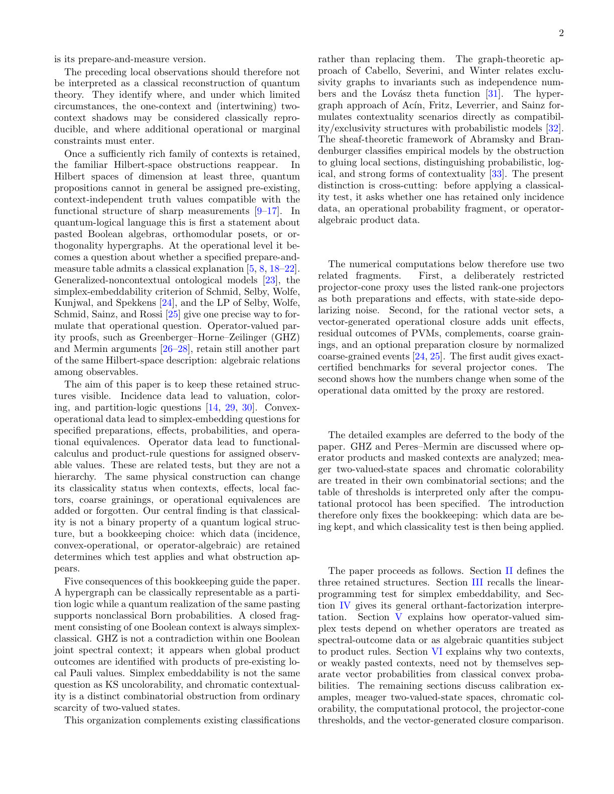
<figcaption class="paper-figure-caption"><b>Fig 1.</b> Low-resolution page preview, page 2</figcaption>
</figure>
<figure class="paper-figure-card">
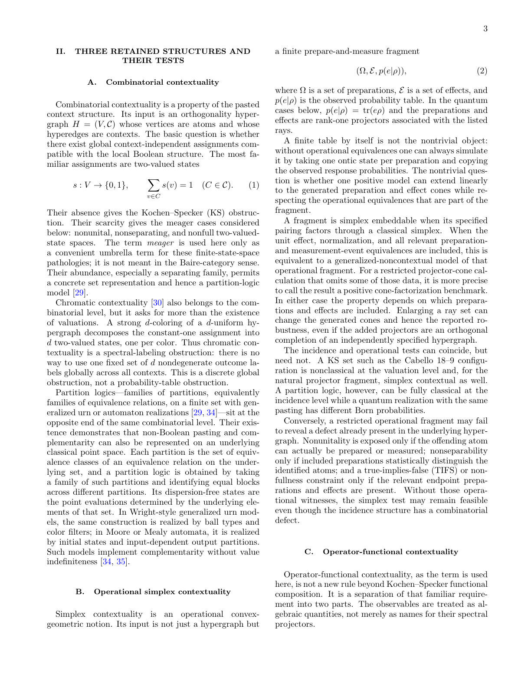
<figcaption class="paper-figure-caption"><b>Fig 2.</b> Low-resolution page preview, page 3</figcaption>
</figure>
<figure class="paper-figure-card">
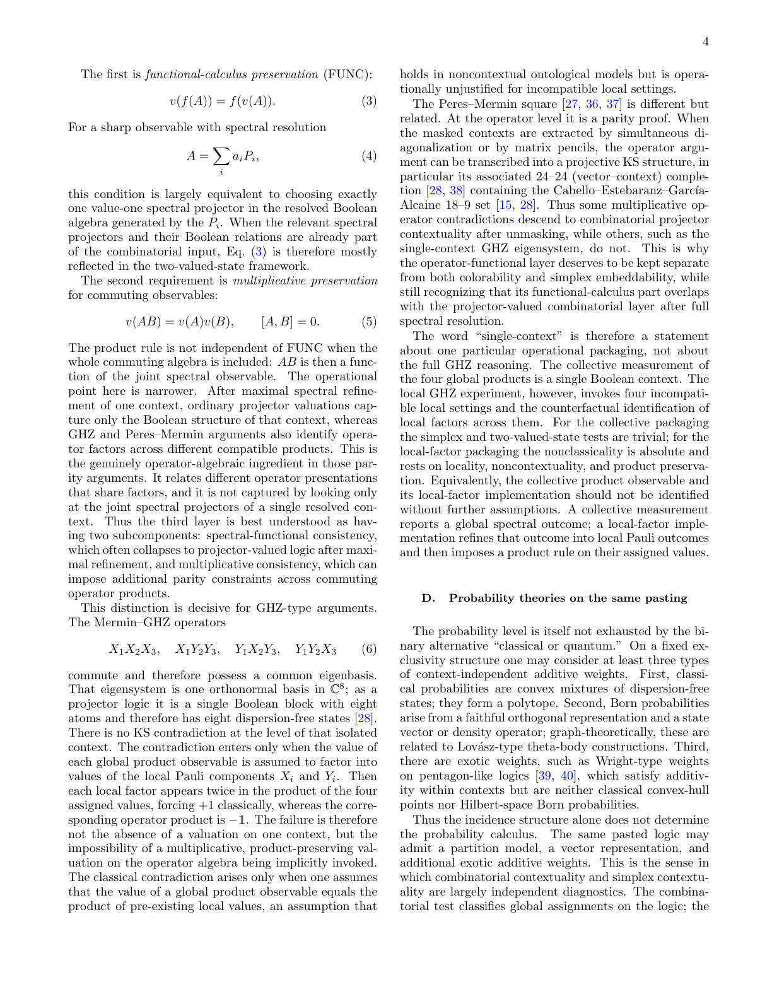
<figcaption class="paper-figure-caption"><b>Fig 3.</b> Low-resolution page preview, page 4</figcaption>
</figure>
<figure class="paper-figure-card">
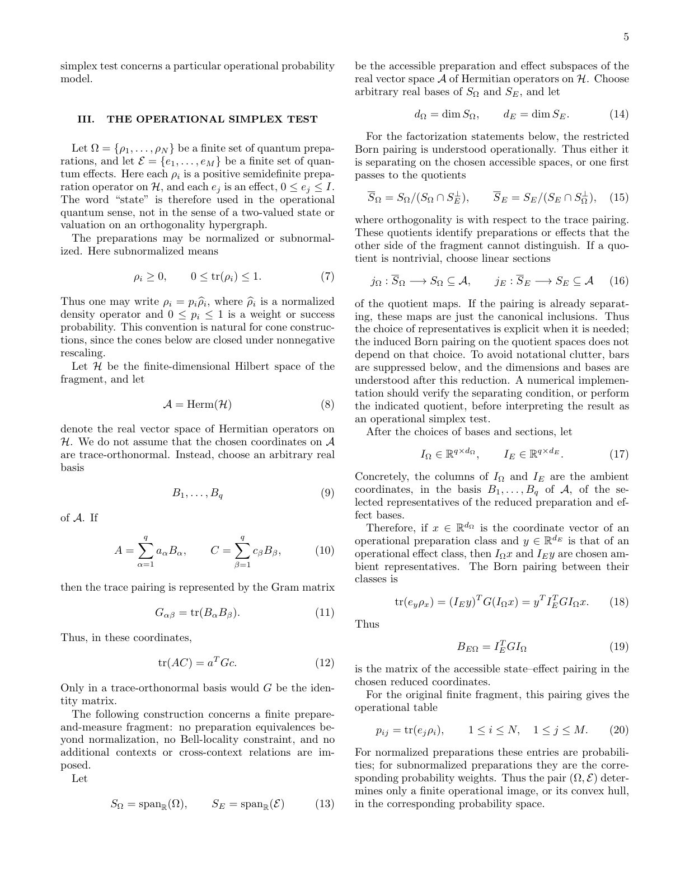
<figcaption class="paper-figure-caption"><b>Fig 4.</b> Low-resolution page preview, page 5</figcaption>
</figure>
<figure class="paper-figure-card">
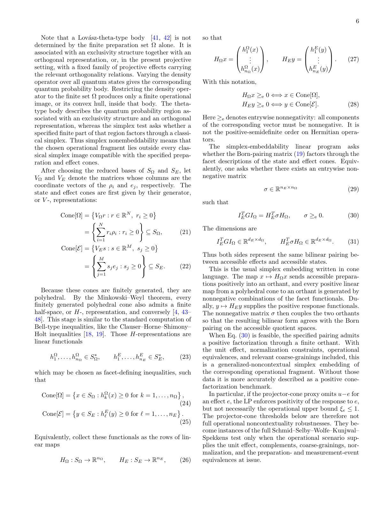
<figcaption class="paper-figure-caption"><b>Fig 5.</b> Low-resolution page preview, page 6</figcaption>
</figure>
</div>

<p><strong>Summary.</strong> This paper develops a comprehensive theory distinguishing between different forms of 'classicality' failure in quantum logics by employing three distinct mathematical tests: incidence, simplex-embedding, and operator-functional rules. The central finding is that the observed nonclassicality depends entirely on which structural assumptions (e.g., requiring product preservation) are imposed during the analysis. It provides a powerful framework for understanding contextuality beyond simple Bell inequalities.</p>
<p><strong>Why it may be interesting.</strong> While not directly focused on AMO Hamiltonians, the rigorous framework for testing contextuality by separating structural assumptions (e.g., local factor vs. global measurement) provides deep theoretical tools applicable to understanding nonclassical correlations in quantum measurements relevant to open systems or entanglement verification.</p>
<details>
<summary>Detailed structure</summary>
<p><strong>Main problem.</strong> The core problem is determining when quantum logical structures (contexts) exhibit genuine nonclassicality, as this property depends critically on which mathematical structure—incidence, convex-operational, or operator-algebraic—is retained.</p>
<p><strong>Main result.</strong> Classicality is shown to be a 'bookkeeping choice' dependent on the structural data used for testing; specific quantum violations (like GHZ) only emerge when global product rules are imposed beyond local context measurements.</p>
<p><strong>Method.</strong> The authors distinguish and apply three types of tests: incidence tests (based on valuations/colorings), simplex-embedding tests (for prepare-and-measure fragments), and operator-functional tests (imposing spectral/product rules).</p>
<p><strong>Model / system.</strong> The study uses abstract finite quantum logics, modeling contexts via Boolean blocks $\{P_1, \dots, P_d\}$ which can be viewed as partitions or Projection-Valued Measures (PVMs) in a physical realization.</p>
<p><strong>Key observables.</strong> Detector-click frequencies ($p_i$), contextuality strength, and the existence of exact primal/dual certificates for various logical configurations ($\Gamma_3$, Specker bug).</p>
<p><strong>Important parameters / regimes.</strong> The results are highly dependent on the specific labeled ray fragments, noise models (e.g., state-side depolarizing noise), and the chosen factorization structure.</p>
<p><strong>Assumptions / limitations.</strong> The analysis carefully distinguishes between 'bare two-context statistics' (which can be classical) and scenarios requiring global constraints or product preservation rules.</p>
<p><strong>Figures summary.</strong> References computational tables comparing various logical configurations, detailing whether exact primal or dual certificates exist for simplex embeddability tests.</p>
<p><strong>Paper structure.</strong> The paper systematically compares the diagnostic power of three distinct mathematical frameworks—incidence (combinatorial), simplex-embedding (operational/convex geometry), and product-rule preservation (algebraic)—to characterize contextuality failure modes.</p>
</details>
<details>
<summary>Abstract</summary>
<p>Finite quantum-logical constructions can appear classical or nonclassical depending on which structure is retained. We distinguish incidence tests based on valuations, colorings, and partition representations; simplex-embedding tests for specified prepare-and-measure fragments; and operator-functional tests imposing spectral and product rules. We show that the collective GHZ joint measurement is a single Boolean context and becomes nonclassical only when a common assignment of local factors, together with product preservation, is required. For selected labelled ray fragments, we compute state-depolarizing thresholds for a restricted projector-cone factorization and for a specified vector-generated operational closure, separating exact primal--dual certificates from numerical estimates. These values are properties of the stated fragments and noise model, not invariants of the underlying hypergraphs or a universal ordering of contextuality.</p>
</details>
<p><sub><a href="#top">↑ back to top</a></sub></p>

<p><a id="paper-2607.11216"></a></p>
<h3 id="distributed-semantics-for-distributed-quantum-computing"><a href="http://arxiv.org/abs/2607.11216v1">Distributed Semantics for Distributed Quantum Computing</a></h3>
<p><strong>Authors:</strong> Jun Inoue<br>
<strong>Type:</strong> theory · <strong>Category:</strong> quantum information and computing · <strong>PDF:</strong> <a href="https://arxiv.org/pdf/2607.11216v1">https://arxiv.org/pdf/2607.11216v1</a><br>
<strong>Analysis basis:</strong> full PDF text, analyzed in chunks
<strong>Topic relevance:</strong> <code>entanglement &amp; information structure</code> <strong>3/5</strong> · <code>methods for driven-dissipative</code> <strong>3/5</strong> · <code>analog quantum simulation</code> <strong>1/5</strong> · <code>correlated / nonlocal dissipation</code> <strong>1/5</strong> · <code>correlated cavity matter</code> <strong>1/5</strong> · <code>driven-dissipative phase transition</code> <strong>1/5</strong> · <code>non-equilibrium dynamics</code> <strong>1/5</strong></p>
<div class="figure-strip-hint">↔ Scroll figures horizontally</div>
<div class="paper-figures-scroll">
<figure class="paper-figure-card">

<figcaption class="paper-figure-caption"><b>Fig 1.</b> Low-resolution page preview, page 2</figcaption>
</figure>
<figure class="paper-figure-card">

<figcaption class="paper-figure-caption"><b>Fig 2.</b> Low-resolution page preview, page 3</figcaption>
</figure>
<figure class="paper-figure-card">

<figcaption class="paper-figure-caption"><b>Fig 3.</b> Low-resolution page preview, page 4</figcaption>
</figure>
<figure class="paper-figure-card">

<figcaption class="paper-figure-caption"><b>Fig 4.</b> Low-resolution page preview, page 5</figcaption>
</figure>
<figure class="paper-figure-card">

<figcaption class="paper-figure-caption"><b>Fig 5.</b> Low-resolution page preview, page 6</figcaption>
</figure>
</div>

<p><strong>Summary.</strong> The paper introduces DH-CCS, a novel quantum process calculus that represents quantum states using Deutsch-Hayden descriptors instead of global state vectors. This descriptor approach grants 'spatial compositionality,' enabling the rigorous analysis of complex, distributed quantum systems by allowing processes to evolve independently while correctly accounting for entanglement across boundaries.</p>
<p><strong>Why it may be interesting.</strong> This work provides a highly formal, compositional framework for analyzing quantum protocols. For AMO/open systems researchers, it offers an algebraic tool to reason about local interactions and entanglement flow without relying solely on computationally intractable global density matrix evolution.</p>
<details>
<summary>Detailed structure</summary>
<p><strong>Main problem.</strong> The core problem is developing a quantum process calculus that achieves 'spatial compositionality'—the ability to analyze complex, entangled systems by treating individual processes in isolation without losing joint state information.</p>
<p><strong>Main result.</strong> The authors propose using Deutsch-Hayden (DH) descriptors within a new quantum process calculus (DH-CCS), which successfully models qubit movement across process boundaries while preserving entanglement structure.</p>
<p><strong>Method.</strong> They adapt DH descriptors to provide a modular, name-based representation of quantum states, allowing for arbitrary splitting and merging that overcomes the limitations of global state vector representations.</p>
<p><strong>Model / system.</strong> The model is an abstract quantum process calculus (DH-CCS) designed to reason about distributed quantum computation. It models qubits using DH descriptors ($\mathfrak{q}$), which are sets of Pauli operators acting on named variables, allowing for local tracking of state evolution.</p>
<p><strong>Key observables.</strong> The primary diagnostic tool is the set of DH descriptors $\mathfrak{q}$, which track the evolution of observables like Pauli $X$ and $Z$ operators for each qubit. Security analysis tracks correlations between qubits (e.g., in BB84).</p>
<p><strong>Important parameters / regimes.</strong> The structure relies on stable, name-based identifiers for qubits rather than position-dependent indices.</p>
<p><strong>Assumptions / limitations.</strong> DH descriptors are excellent for tracking physical movement across boundaries but require density matrices to accurately account for information flow and entanglement collapse. The calculus also leaves out classical control derived from measurement results.</p>
<p><strong>Figures summary.</strong> Figure 1 illustrates the syntax of DH-CCS, detailing production rules for actions like splitting ($c!x.P$), conditional operations, and parallel composition ($\|$) that enforce compositional semantics.</p>
<p><strong>Paper structure.</strong> The paper progresses by first identifying the need for spatial compositionality, proposing DH descriptors as a solution to monolithic state limitations, developing the calculus (DH-CCS) with name-based indexing, demonstrating its utility in modeling open systems (BB84), and finally discussing equivalence notions and remaining theoretical gaps.</p>
</details>
<details>
<summary>Abstract</summary>
<p>We present a quantum process calculus that can split the system state along process boundaries and follow the evolution of each process in isolation, without losing information about the joint state-a property we call spatial compositionality. Compositionality is the key to reasoning about any complex system, yet quantum process calculi have struggled to provide its spatial kind, which would enable analyzing a system one process at a time. Many a quantum process calculi have been proposed, but they invariably rely on a global state representation based on state vectors or density matrices, with no known way to split them without losing information about entanglement. We propose to model quantum states with Deutsch-Hayden descriptors instead, which provide a modular representation of qubit states and their evolution. We adapt these descriptors to allow arbitrary splitting and merging of the store of qubits, leading to an unusual process calculus in which qubit transfer messages carry the actual state of the qubit, where existing calculi transfer only a reference. The calculus gives localized views of system state visible to each process, which can be assembled back together into the joint state. We define a notion of process equivalence with extensive justification grounded in physics and show a bisimulation whose soundness proof is simplified by spatial compositionality. The calculus can model open systems entangled with external processes, and we demonstrate this capability on a fragment of the BB84 key distribution protocol. This exercise shows that Deutsch-Hayden descriptors can successfully track qubit movements across process and system boundaries, though it needs help from density matrices to reason about information flow.</p>
</details>
<p><sub><a href="#top">↑ back to top</a></sub></p>

<p><a id="paper-2607.11484"></a></p>
<h3 id="fractionalized-metals-from-doped-anyons-application-to-tmote2"><a href="http://arxiv.org/abs/2607.11484v1">Fractionalized metals from doped anyons: Application to tMoTe2</a></h3>
<p><strong>Authors:</strong> T. Senthil<br>
<strong>Type:</strong> theory · <strong>Category:</strong> strongly correlated electrons · <strong>PDF:</strong> <a href="https://arxiv.org/pdf/2607.11484v1">https://arxiv.org/pdf/2607.11484v1</a><br>
<strong>Analysis basis:</strong> full PDF text, analyzed in chunks
<strong>Topic relevance:</strong> <code>Keldysh / 2PI / non-Gaussian methods</code> <strong>3/5</strong> · <code>driven-dissipative phase transition</code> <strong>2/5</strong> · <code>non-equilibrium universality</code> <strong>2/5</strong> · <code>Kondo &amp; dissipative impurity</code> <strong>1/5</strong> · <code>analog quantum simulation</code> <strong>1/5</strong> · <code>methods for driven-dissipative</code> <strong>1/5</strong> · <code>non-equilibrium dynamics</code> <strong>1/5</strong></p>
<div class="figure-strip-hint">↔ Scroll figures horizontally</div>
<div class="paper-figures-scroll">
<figure class="paper-figure-card">

<figcaption class="paper-figure-caption"><b>Fig 1.</b> Low-resolution page preview, page 2</figcaption>
</figure>
<figure class="paper-figure-card">

<figcaption class="paper-figure-caption"><b>Fig 2.</b> Low-resolution page preview, page 3</figcaption>
</figure>
<figure class="paper-figure-card">

<figcaption class="paper-figure-caption"><b>Fig 3.</b> Low-resolution page preview, page 4</figcaption>
</figure>
<figure class="paper-figure-card">

<figcaption class="paper-figure-caption"><b>Fig 4.</b> Low-resolution page preview, page 5</figcaption>
</figure>
<figure class="paper-figure-card">

<figcaption class="paper-figure-caption"><b>Fig 5.</b> Low-resolution page preview, page 6</figcaption>
</figure>
</div>

<p><strong>Summary.</strong> This paper theoretically models the metallic phase arising from doping a Fractional Quantum Anomalous Hall state in materials like MoTe2. The authors propose a novel Z3 Orthogonal Metal (Z3OM) characterized by fractional charge carriers coupled to a discrete gauge field. This framework explains observed high resistivities and predicts unique experimental signatures such as specific shot noise levels and quantum oscillation patterns.</p>
<p><strong>Why it may be interesting.</strong> It provides a detailed theoretical framework connecting topological order (FQAH/FCI) to exotic metallic phases that exhibit non-Fermi liquid behavior, which is highly relevant to understanding strongly correlated materials near quantum critical points.</p>
<details>
<summary>Detailed structure</summary>
<p><strong>Main problem.</strong> The study investigates the nature of metallic phases that emerge when doping a Fractional Quantum Anomalous Hall (FQAH) state, specifically focusing on the 'normal' conducting state rather than superconductivity.</p>
<p><strong>Main result.</strong> The authors propose a Z3 Orthogonal Metal (Z3OM), characterized by fractional charge-1/3 quasiparticles coupled to a discrete Z3 gauge field, which naturally explains high residual resistivity near the FQAH state.</p>
<p><strong>Method.</strong> The analysis employs low-density expansions and effective field theories derived from anyon models, utilizing Chern-Simons actions and parton descriptions.</p>
<p><strong>Model / system.</strong> The system is based on doping a $\sigma_{xy} = 2e^2/3h$ FQAH state in twisted MoTe2. The model treats the doped carriers as a fluid of mobile anyons (charge 1/3) interacting with a background gauge field.</p>
<p><strong>Key observables.</strong> Fractional Josephson oscillations, $(2e/3)$ shot noise at interfaces, distinct quantum oscillation slopes, and $G(V) \sim V^2$ tunneling conductance at low bias.</p>
<p><strong>Important parameters / regimes.</strong> Filling fraction $
u = 2/3$, fractional charge $1/3$, discrete gauge group $\mathbb{Z}_3$.</p>
<p><strong>Assumptions / limitations.</strong> The theory relies on treating interactions perturbatively in the low-density limit and assumes that the metallic state is governed by fractionalized quasiparticles rather than conventional electron excitations.</p>
<p><strong>Figures summary.</strong> Not specified, but diagnostics include predicted conductivity ($\sigma_{xx}, \sigma_{xy}$) and noise measurements related to fractional charge carriers.</p>
<p><strong>Paper structure.</strong> The paper progresses from defining the physical problem (doping FQAH states) to constructing effective low-energy theories for Z3OMs, deriving transport properties, and finally proposing multiple experimental signatures to distinguish this fractionalized normal state.</p>
</details>
<details>
<summary>Abstract</summary>
<p>A fluid of mobile anyons may arise naturally when a Fractional Quantum Anomalous Hall (FQAH) state is doped. Motivated by recent experiments on twisted $MoTe_2$, we study metallic phases obtained by doping the $σ_{xy} = 2e^2/3h$ state. We propose that the high-resistivity metal observed adjacent to this FQAH state is a $Z_3$ Orthogonal Metal: a non-Fermi liquid with sharp charge $1/3$ fermionic quasiparticles coupled to a discrete $Z_3$ gauge field but with no sharp electronic quasiparticle. For a dilute gas of three species of charge-$1/3$ anyons with $π/3$ statistics, we construct two $U(3)$ symmetric $Z_3$ Orthogonal Metals, distinguished by whether the gapless fermions transform as $SU(3)$ triplets or singlets. We show that these states naturally yield large electrical resistivities even when the fractionalized quasiparticles are in a good metallic regime. Pairing of the charge-$1/3$ fermions produces an ordinary charge-$2e$ superconductor, smoothly connected to a BCS state but obtained through an intrinsically fractionalized normal state. We discuss experimental signatures of the idea that the normal metallic state in the lightly doped $2/3$ state may have fractionalized charge carriers.</p>
</details>
<p><sub><a href="#top">↑ back to top</a></sub></p>

<p><a id="paper-2607.10285"></a></p>
<h3 id="interpreting-learning-dynamics-of-autoencoders-transient-scaling-and-emerging-concepts-of-the-ising-model"><a href="http://arxiv.org/abs/2607.10285v1">Interpreting learning dynamics of autoencoders: Transient scaling and emerging concepts of the Ising model</a></h3>
<p><strong>Authors:</strong> Max Weinmann, Miriam Klopotek<br>
<strong>Type:</strong> theory · <strong>Category:</strong> disordered systems and neural networks · <strong>PDF:</strong> <a href="https://arxiv.org/pdf/2607.10285v1">https://arxiv.org/pdf/2607.10285v1</a><br>
<strong>Analysis basis:</strong> full PDF text, analyzed in chunks
<strong>Topic relevance:</strong> <code>exotic spin models in light-matter</code> <strong>3/5</strong> · <code>driven-dissipative phase transition</code> <strong>2/5</strong> · <code>non-equilibrium dynamics</code> <strong>2/5</strong> · <code>analog quantum simulation</code> <strong>1/5</strong> · <code>methods for driven-dissipative</code> <strong>1/5</strong> · <code>non-equilibrium universality</code> <strong>1/5</strong> · <code>spintronics-quantum-optics interface</code> <strong>1/5</strong></p>
<div class="figure-strip-hint">↔ Scroll figures horizontally</div>
<div class="paper-figures-scroll">
<figure class="paper-figure-card">

<figcaption class="paper-figure-caption"><b>Fig 1.</b> FIG. 1. Ising model spin configurations on a square lattice (left) are mapped to a binary representation (right). Spins pointing down (blue) are mapped to zero (white) and spins pointing up (red) to one (black). The two-dimensional binary representation is converted to floating-point numbers and flat- tened into a one-dimensional vector. This one-dimensional pixel vector serves as input to an autoencoder.</figcaption>
</figure>
<figure class="paper-figure-card">

<figcaption class="paper-figure-caption"><b>Fig 2.</b> FIG. 2. Joint distribution of the entire dataset (black dots) over sample energy and magnetization. The area containing almost all samples from a given temperature is indicated by colored contours. At low temperatures, there are two distinct clusters with low energy and high absolute magnetization (upper and lower left). At high temperatures, a single cluster with a small absolute magnetization and higher energy becomes dominant (center-right).</figcaption>
</figure>
<figure class="paper-figure-card">

<figcaption class="paper-figure-caption"><b>Fig 3.</b> FIG. 3. Auto-Encoder model architecture composed of an encoder (left) and decoder model (right). The encoder trans- forms the input with a sequence of linear and non-linear ReLU layers into a lower-dimensional latent representation, referred to as a bottleneck. The decoder transforms this latent rep- resentation with the same sequence of layers (but different parameters) into the output. The parameters of each lin- ear layer are optimized during training to reduce the mean squared deviation (MSD) between inputs and outputs.</figcaption>
</figure>
<figure class="paper-figure-card">

<figcaption class="paper-figure-caption"><b>Fig 4.</b> FIG. 4. Validation loss evolution of raw data over training checkpoints averaged over all runs with the same model (depth, width, bottleneck) and learning rate. Each subplot shows the average across different seeds (seedmodel ∈{0, 1}, seedbatch ∈ {0, 1}) and batch sizes |B| ∈{30, 300, 3000} for a given model width and depth. The line styles correspond to different bottleneck sizes, while the line colors indicate the base learning rate used for training. All loss curves show a rapid initial decrease, followed by none or another rapid or slow decrease depending on the hyperparameters. The MSD plateau values are equivalent to the loss obtained by predicting the training data average (LMSD...</figcaption>
</figure>
<figure class="paper-figure-card">

<figcaption class="paper-figure-caption"><b>Fig 5.</b> FIG. 5. Model output evolution for samples from the critical temperature with the highest final loss for different bottlenecks. Samples with the lowest loss from the same run are shown in Fig. 21. Each column of 5 samples shows the temporal evolution of one model, from bottom to top. The last row shows the input, which is the target of the optimization. The model checkpoints are taken from runs MB1, MB8, MB64 (see Tab. II), all trained with the most typical model configuration: depth d = 4, width w = 512, and a medium learning rate λ = 10−4. The output for all samples starts around zero, where it remains until a rapid transition with fluctuations between pixels, after which it converges to...</figcaption>
</figure>
</div>

<p><strong>Summary.</strong> This paper analyzes how autoencoders learn physical concepts from Ising model data by studying the dynamics of their training process. It identifies distinct dynamical regimes corresponding to magnetization and energy dominance within the latent space. The work establishes a theoretical framework viewing learning as a non-equilibrium process that reveals underlying topological structures.</p>
<p><strong>Why it may be interesting.</strong> It provides a powerful, physics-grounded analogy for understanding feature extraction in deep learning, linking concepts like phase transitions or order parameters (magnetization/energy) directly to network dynamics.</p>
<details>
<summary>Detailed structure</summary>
<p><strong>Main problem.</strong> The study investigates how unsupervised autoencoders learn macroscopic, theory-relevant variables from microscopic spin configurations generated by the Ising model.</p>
<p><strong>Main result.</strong> Learning dynamics reveal two distinct regimes (magnetization vs. energy dominated), and a common trajectory topology is found across representation spaces when analyzing prediction errors.</p>
<p><strong>Method.</strong> The authors analyze autoencoder training dynamics by studying how reconstruction loss drives trajectories in the low-dimensional latent space, using concepts from dynamical systems theory.</p>
<p><strong>Model / system.</strong> The physical system is the Ising model used to generate spin configurations. The machine learning model is a deterministic nonlinear autoencoder trained on these microscopic data sets.</p>
<p><strong>Key observables.</strong> Learning dynamics, prediction errors inducing flow fields, magnetization ($M$), energy ($E$), and Spearman rank correlation between input differences and latent space distances.</p>
<p><strong>Important parameters / regimes.</strong> Model depth/width, learning rate ($\lambda$), bottleneck size ($b$), and coarse-graining spatial scales.</p>
<p><strong>Assumptions / limitations.</strong> Learning is viewed as a process driven far from equilibrium by fluctuations; standard post hoc methods fail to capture the concept formation <em>process</em>.</p>
<p><strong>Figures summary.</strong> Figures illustrate how correlation between input differences ($\Delta M$ or $\Delta E$) and latent distance changes with bottleneck size, showing stability for magnetization topology in larger bottlenecks. Other figures track loss evolution across coarse-graining scales and show trajectories for $M$ and $E$.</p>
<p><strong>Paper structure.</strong> The paper establishes a dynamical viewpoint of learning by analyzing how autoencoders process Ising model data. It identifies two distinct training regimes (magnetization/energy) and uses recursive trajectory analysis to map the underlying topological structure preserved during compression.</p>
</details>
<details>
<summary>Abstract</summary>
<p>We study how unsupervised autoencoders trained on microscopic spin configurations from the Ising model learn macroscopic, theory-relevant variables underlying the data-generating process. Without embedding domain knowledge, we mimic a typical discovery setting: We quantify learning across multiple spatial (coarse-graining) scales and reveal two distinct dynamical regimes controlled by main hyperparameters (model depth, width, and learning rate) -- a magnetization-dominated regime and an energy-dominated regime characterized by trade-offs in their representation quality. The first regime is a transitory state exhibiting dynamical scaling and fluctuations that follow an ordering-to-scale; the second gradually shifts resolution towards smaller scales relevant for the energy representation. Deep models trained at moderate and fast rates become arrested before reaching these regimes. With a novel analysis of recursive-dynamic trajectories, we demonstrate that prediction errors induce flow fields that produce a common trajectory topology across all representation spaces. A dynamical viewpoint of learning is established in which intrinsic properties expose the effects of forced changes in representation during training. We utilize the intuition that learning operates as a process driven far from equilibrium by fluctuations from the training data and optimizer to provide an interpretive basis grounded in both the physical world and the machine models that represent it.</p>
</details>
<p><sub><a href="#top">↑ back to top</a></sub></p>

<p><a id="paper-2607.11768"></a></p>
<h3 id="spacer-mediated-gold-nanocube-arrays-for-edge-localized-excitonic-enhancement-in-monolayer-mos2"><a href="http://arxiv.org/abs/2607.11768v1">Spacer-Mediated Gold Nanocube Arrays for Edge-Localized Excitonic Enhancement in Monolayer MoS2</a></h3>
<p><strong>Authors:</strong> Abdullah Efe Yildiz, Emre Ozan Polat<br>
<strong>Type:</strong> theory · <strong>Category:</strong> other · <strong>PDF:</strong> <a href="https://arxiv.org/pdf/2607.11768v1">https://arxiv.org/pdf/2607.11768v1</a><br>
<strong>Analysis basis:</strong> full PDF text, analyzed in chunks
<strong>Topic relevance:</strong> <code>interference shaping light</code> <strong>3/5</strong> · <code>Tavis-Cummings &amp; cavity-many-emitter</code> <strong>2/5</strong> · <code>analog quantum simulation</code> <strong>1/5</strong> · <code>correlated / nonlocal dissipation</code> <strong>1/5</strong> · <code>correlated cavity matter</code> <strong>1/5</strong> · <code>driven-dissipative phase transition</code> <strong>1/5</strong> · <code>methods for driven-dissipative</code> <strong>1/5</strong> · <code>non-equilibrium dynamics</code> <strong>1/5</strong></p>
<div class="figure-strip-hint">↔ Scroll figures horizontally</div>
<div class="paper-figures-scroll">
<figure class="paper-figure-card">

<figcaption class="paper-figure-caption"><b>Fig 1.</b> Figure 1. Spacer mediated plasmonic response and design parameters of AuNCs. (a) Schematic illustration of a single AuNC with side length a placed on a dielectric spacer of thickness ts. (b,c) Near-field intensity maps of AuNCs with side lengths of 105 and 130 nm, respectively. Showing strong electric-field localization at the cube corners. (d) Extinction cross-section spectra for AuNCs with different side lengths from 50 to 130 nm, demonstrating the increase and redshift of the localized surface plasmon resonance with increasing cube size. (e,f) Extinction spectra of the 105 and 130 nm AuNCs in the presence of Al2O3 and h-BN spacer environments with different spacer thicknesses. The...</figcaption>
</figure>
<figure class="paper-figure-card">

<figcaption class="paper-figure-caption"><b>Fig 2.</b> Figure 2. Hybrid AuNC/spacer/MoS2 device geometry yielding in-plane electric-field enhancement. (a) Schematic of the AuNC/spacer/ML MoS2 on SiO2/Si device substrate. Modeled plasmonic device focuses the in plane electric field intensity for the enhanced exciton generation in MoS2 layer. (b) Spectral in-plane electric field intensity map (|E|2) for varying Al2O3 spacer thickness with 105 wide and (c) 130 nm wide AuNCs. The field enhancement is strongest near the plasmon-exciton overlap region and decreases or redistributes as the spacer thickness increases. The strongest enhancement is again obtained for the thinnest spacer layers, where the MoS2 monolayer remains closest to the AuNC...</figcaption>
</figure>
<figure class="paper-figure-card">

<figcaption class="paper-figure-caption"><b>Fig 3.</b> Figure 3. Absorption spectra of monolayer MoS2 coupled to AuNC structures through Al2O3 and h-BN spacers. (a) Schematic of the periodic AuNC array integrated with the spacer/MoS2/SiO2/Si stack. The array period is p = 250 nm. (b) AuNC Normalized absorption spectra for MoS2 coupled to 105 nm wide AuNC through different spacers. The dashed line shows the excitons of bare monolayer MoS2 on SiO2/Si. (c,d) Normalized absorption spectra for 130 nm AuNC structures with h-BN and Al2O3 spacers, respectively, for different ts. The vertical dashed lines mark the B and A exciton wavelengths of monolayer MoS2. The AuNC modifies the excitonic absorption profile through plasmon-assisted near-field...</figcaption>
</figure>
<figure class="paper-figure-card">

<figcaption class="paper-figure-caption"><b>Fig 4.</b> Figure 4 presents the carrier generation rate of monolayer MoS2 coupled to periodic AuNC arrays. Unlike the normalized absorption spectra in Figure 3, the carrier generation rate gives a more direct measure of how efficiently incident light produces electron-hole pairs inside the MoS2 monolayer. Therefore, this analysis is useful for evaluating the practical effect of plasmonic near- field enhancement on excitonic light harvesting. Figures 4a and 4b show the carrier generation rate spectra for 130 nm AuNC with h-BN and Al2O3 spacers, respectively. In both spacer systems, the carrier generation is strongly enhanced in the visible excitonic region of MoS2, especially near the A- and B-exciton...</figcaption>
</figure>
<figure class="paper-figure-card">

<figcaption class="paper-figure-caption"><b>Fig 5.</b> Figure 4. Carrier generation rate spectra of ML MoS2 coupled to AuNC arrays for different spacer materials and thicknesses. (a,b) The carrier generation spectra for the 130 nm AuNC integrated with h-BN and Al2O3 on ML MoS2 respectively. (c,d) The corresponding spectral charge generation rates for the 105 nm AuNC. In all cases, the generation rate is enhanced around the A- and B-excitonic peaks of monolayer MoS2, with the strongest response obtained for the thinnest spacer.</figcaption>
</figure>
</div>

<p><strong>Summary.</strong> The research demonstrates that coupling monolayer MoS2 to tunable gold nanocube arrays creates a highly efficient plasmonic platform for enhancing excitonic emission. By controlling the size and spacer material between the AuNCs and MoS2, researchers can systematically tune the near-field enhancement, leading to substantial boosts in carrier generation rates and photoluminescence quantum yield.</p>
<p><strong>Why it may be interesting.</strong> This work directly addresses quantum optics and open quantum systems concepts by modeling engineered light-matter interaction platforms. The quantitative enhancement factors provide concrete metrics for designing solid-state emitters.</p>
<details>
<summary>Detailed structure</summary>
<p><strong>Main problem.</strong> The primary challenge is enhancing light-matter interaction, specifically excitonic processes, in atomically thin semiconductors like monolayer MoS2 due to their intrinsic optical thickness limitations.</p>
<p><strong>Main result.</strong> Au nanocube arrays serve as a simple, scalable, and tunable plasmonic platform capable of significantly enhancing both the carrier generation rate and photoluminescence (PL) emission in ML MoS2.</p>
<p><strong>Method.</strong> The study uses numerical simulations (FDTD method) to model the coupling between localized surface plasmon resonances (LSPR) from Au nanocubes and excitonic transitions in MoS2.</p>
<p><strong>Model / system.</strong> The system consists of monolayer MoS2 coupled to size-tuned gold nanocube arrays separated by tunable dielectric spacer layers, such as Al2O3 or h-BN. The coupling strength is modulated by the plasmon resonance tuning and the thickness/material of the spacer.</p>
<p><strong>Key observables.</strong> Excitation-rate enhancement (up to 4.35 at B-exciton), radiative decay-rate enhancement (&gt;80), photoluminescence enhancement ($\sim$350-fold), and the spectral dependence of these enhancements across A- and B-excitonic transitions.</p>
<p><strong>Important parameters / regimes.</strong> Au nanocube side length, spacer material (Al2O3 vs h-BN), and spacer thickness ($t_s$).</p>
<p><strong>Assumptions / limitations.</strong> The enhancement mechanism is attributed to the combined effect of spectral overlap between LSPR and excitons, and distance-dependent near-field coupling; it is not strictly an exciton-selective switching process.</p>
<p><strong>Figures summary.</strong> Figures illustrate plasmonic response (extinction spectra), in-plane electric field intensity ($   ext{|E|}^2$) dependence on spacer thickness, normalized absorption spectra showing retained excitonic features, and carrier generation rate/quantum yield vs. spacer thickness.</p>
<p><strong>Paper structure.</strong> The paper systematically investigates the physical platform by first establishing the need for enhancement, then detailing how tuning AuNC size and spacer properties controls the LSPR, which in turn modulates the near-field coupling to enhance excitonic processes (CGR and PL).</p>
</details>
<details>
<summary>Abstract</summary>
<p>Plasmonic nanostructures offer an effective route for enhancing light-matter interaction in atomically thin semiconductors, whose optical response is intrinsically limited by their sub-nanometer active thickness. Here, we numerically investigate excitonic enhancement in monolayer (ML) Molybdenum Disulfide (MoS2) coupled to size-tuned gold (Au) nanocube arrays separated by thin aluminum oxide (Al2O3) and hexagonal boron nitride (h-BN) spacer layers. By varying the nanocube side length, the localized surface plasmon resonance is tuned across the visible spectral range to modulate the A- and B-excitonic transitions of monolayer MoS2. We show that the nanocube-size-dependent spectral redshift can be further controlled through the spacer material and thickness, enabling systematic tuning of the near-field distribution, carrier generation rate, quantum yield, and radiative decay enhancement. Localized plasmonic confinement yields excitation-rate enhancements of up to 4.35 at B-excitonic transition (605 nm) and 3.66 at A-excitonic transition (650 nm), while the radiative decay-rate enhancement exceeds 80, leading to 350-fold photoluminescence enhancement. Although both A- and B-excitonic channels are enhanced simultaneously, their relative contributions depend on nanocube size, spacer material, and spacer thickness, indicating wavelength-dependent excitonic modulation rather than strict exciton-selective switching. These findings establish Au nanocube arrays as a simple, scalable, and tunable plasmonic platform for enhancing excitonic carrier generation and emission in ML MoS2.</p>
</details>
<p><sub><a href="#top">↑ back to top</a></sub></p>

<p><a id="paper-2607.09882"></a></p>
<h3 id="benchmarking-zero-setup-quantum-circuit-simulators"><a href="http://arxiv.org/abs/2607.09882v1">Benchmarking Zero-Setup Quantum Circuit Simulators</a></h3>
<p><strong>Authors:</strong> Arul Rhik Mazumder, Mohammed Zuhair Mullath, Hayk Tepanyan<br>
<strong>Type:</strong> both · <strong>Category:</strong> numerical methods · <strong>PDF:</strong> <a href="https://arxiv.org/pdf/2607.09882v1">https://arxiv.org/pdf/2607.09882v1</a><br>
<strong>Analysis basis:</strong> full PDF text, analyzed in chunks
<strong>Topic relevance:</strong> <code>methods for driven-dissipative</code> <strong>3/5</strong> · <code>entanglement &amp; information structure</code> <strong>2/5</strong> · <code>non-equilibrium dynamics</code> <strong>2/5</strong> · <code>analog quantum simulation</code> <strong>1/5</strong> · <code>driven-dissipative phase transition</code> <strong>1/5</strong> · <code>non-equilibrium universality</code> <strong>1/5</strong></p>
<div class="figure-strip-hint">↔ Scroll figures horizontally</div>
<div class="paper-figures-scroll">
<figure class="paper-figure-card">

<figcaption class="paper-figure-caption"><b>Fig 1.</b> Fig. 1: Log-scale runtime (ms) for quantum volume circuits on CPU (solid blue) and GPU (dashed red) across 16–34 qubits and five circuit depths (30–150). GPU outperforms CPU by 1–2 orders of magnitude at higher qubit counts; both scale exponentially. The dip at 29 qubits on CPU curves reflects a hardware transition in the managed platform.</figcaption>
</figure>
<figure class="paper-figure-card">

<figcaption class="paper-figure-caption"><b>Fig 2.</b> Fig. 2: Quantum volume circuit runtime at depth 60 across four backends (16–34 qubits, log scale). BlueQubit GPU (red) is fastest at all qubit counts, reaching ∼4 × 104 ms at 34 qubits. BlueQubit CPU (blue) exhibits a characteristic dip near 29 qubits before resuming exponential growth. Braket SV1 (purple) diverges sharply above 27 qubits, surpassing 107 ms above 30 qubits; benchmarking was discontinued beyond 31 qubits due to excessive runtime and cloud cost. Quantum Rings (green) and BlueQubit CPU converge near 106 ms at 34 qubits.</figcaption>
</figure>
<figure class="paper-figure-card">

<figcaption class="paper-figure-caption"><b>Fig 3.</b> Fig. 3: MPS runtime vs. bond dimension at n = 40 qubits, d = 10 layers (log–log scale). CPU scaling (T ∝χ2.03±0.11) approaches the theoretical χ2 for gate-contraction-dominated regimes. GPU scaling (T ∝χ1.49±0.06) is sub-quadratic, reflecting efficient parallelization of contraction and SVD operations at large tensor sizes. The GPU advantage grows with χ as S(χ) ∝χ0.55. Dotted lines extrapolate both fits to χ = 5,000, projecting runtimes of 119.2 h (CPU) vs. 11.7 h (GPU).</figcaption>
</figure>
<figure class="paper-figure-card">

<figcaption class="paper-figure-caption"><b>Fig 4.</b> Figure 2 compares all four state-vector backends on the same depth-60 QV circuits. Three findings emerge. First, BlueQubit GPU is the fastest state-vector backend at all tested qubit counts, outperforming Braket SV1 and Quantum Rings by 1–2 orders of magnitude at 30+ qubits and BlueQubit CPU by roughly 2× at 34 qubits. Second, platform differences grow with problem size. At 20 qubits, all backends complete within a few seconds; at 34 qubits, the spread exceeds three orders of magnitude. This is</figcaption>
</figure>
<figure class="paper-figure-card">

<figcaption class="paper-figure-caption"><b>Fig 5.</b> Fig. 4: MPS build-phase runtime vs. bond dimension at shots = 1, isolating the MPS construction phase from sampling overhead. CPU build time scales as χ2.10±0.11; GPU build time scales as χ1.48±0.07, yielding a growing GPU advantage of χ0.61. Sampling time is negligible at shots= 1 and is not plotted.</figcaption>
</figure>
</div>

<p><strong>Summary.</strong> This paper conducts a comprehensive benchmark of various hosted quantum circuit simulators, comparing performance across GPU-accelerated MPS and PPS methods against state-of-the-art backends. The key finding is that GPUs offer massive speedups, enabling simulations at higher accuracy and scale than previously possible using commodity CPUs. It establishes a standardized protocol for evaluating the practical computational limits of current quantum simulation toolkits.</p>
<p><strong>Why it may be interesting.</strong> It provides crucial, quantitative data on the computational scaling of modern quantum simulation techniques (MPS/PPS), which are essential numerical tools for studying strongly correlated systems and dynamics in condensed matter physics.</p>
<details>
<summary>Detailed structure</summary>
<p><strong>Main problem.</strong> The performance characteristics of hosted quantum circuit simulation environments are poorly documented, making it difficult for practitioners to select an optimal backend.</p>
<p><strong>Main result.</strong> GPU acceleration provides substantial speedups (up to 1,400x) over CPU implementations for both MPS and PPS simulations, enabling access to higher accuracy regimes previously unreachable.</p>
<p><strong>Method.</strong> The study systematically benchmarks multiple zero-setup simulators (BlueQubit, AWS Braket, etc.) across different simulation methods: State-Vector (SV), Matrix Product States (MPS), and Pauli Path Simulation (PPS).</p>
<p><strong>Model / system.</strong> Quantum circuits are simulated using various approximation techniques. Benchmarks include random SU(4) circuits, Quantum Fourier Transform (QFT), and the 127-qubit kicked Ising model.</p>
<p><strong>Key observables.</strong> Runtime ($T$), speedup factor ($S$), scaling exponents ($\chi$ for MPS), and simulation accuracy/fidelity ($\delta$).</p>
<p><strong>Important parameters / regimes.</strong> Bond dimension ($\chi$), qubit count ($n$), circuit depth ($d$), and truncation threshold ($\delta$).</p>
<p><strong>Assumptions / limitations.</strong> The comparison relies on standardized protocols to expose crossover points, but limitations include the scope of vendor APIs (e.g., AWS Braket SV1) and the exclusion of hybrid variational workloads.</p>
<p><strong>Figures summary.</strong> Figures illustrate the dramatic runtime divergence between GPU and CPU backends for state-vector simulation at high qubit counts ($\ge 30$), and show scaling behavior for MPS/PPS methods.</p>
<p><strong>Paper structure.</strong> The paper is structured as a systematic benchmarking study, comparing multiple software tools across different physical simulation regimes (SV, MPS, PPS) to provide reproducible performance characterizations.</p>
</details>
<details>
<summary>Abstract</summary>
<p>Practitioners increasingly rely on hosted simulation environments, but their performance characteristics remain poorly documented. We present a systematic benchmarking study of GPU-accelerated approximate quantum simulation across two widely used methods: matrix product states (MPS) and Pauli path simulation (PPS), comparing BlueQubit (a hosted tool that handles hardware provisioning, simulator configuration, and job orchestration) against AWS Braket, Quantum Rings, PPS-Qiskit, and PauliPropagation.jl. For MPS, we find that GPU runtime yields sub-quadratic scaling with bond dimension, with a growing advantage over CPU at increasing scale. For Pauli path simulation on IBM's 127-qubit kicked Ising benchmark, GPUs deliver up to $1{,}400\times$ speedup at fine truncation thresholds ($δ= 2.5 \times 10^{-5}$, 27.6M Pauli terms), and are the only backends that reach accuracy regimes below $δ= 10^{-5}$, which remained inaccessible to the commodity CPU-based implementations and self-contained SDKs evaluated here. We also provide a reproducible characterization of these simulators across regimes, including tradeoffs that isolated evaluations do not show. To support transparency and reuse, we provide a public GitHub repository containing all benchmarking code and configurations.</p>
</details>
<p><sub><a href="#top">↑ back to top</a></sub></p>

<p><a id="paper-2607.11854"></a></p>
<h3 id="bounding-kirkwood-dirac-negativity-of-gaussian-processes"><a href="http://arxiv.org/abs/2607.11854v1">Bounding Kirkwood-Dirac negativity of Gaussian processes</a></h3>
<p><strong>Authors:</strong> Luca Bianchi, Carlo Marconi, Riccardo Cioli, Jan Sperling<br>
<strong>Type:</strong> theory · <strong>Category:</strong> other · <strong>PDF:</strong> <a href="https://arxiv.org/pdf/2607.11854v1">https://arxiv.org/pdf/2607.11854v1</a><br>
<strong>Analysis basis:</strong> full PDF text, analyzed in chunks
<strong>Topic relevance:</strong> <code>quantum measurements</code> <strong>3/5</strong> · <code>measurement-induced transitions</code> <strong>2/5</strong> · <code>Keldysh / 2PI / non-Gaussian methods</code> <strong>1/5</strong> · <code>correlated / nonlocal dissipation</code> <strong>1/5</strong> · <code>driven-dissipative phase transition</code> <strong>1/5</strong> · <code>entanglement &amp; information structure</code> <strong>1/5</strong> · <code>methods for driven-dissipative</code> <strong>1/5</strong></p>
<div class="figure-strip-hint">↔ Scroll figures horizontally</div>
<div class="paper-figures-scroll">
<figure class="paper-figure-card">

<figcaption class="paper-figure-caption"><b>Fig 1.</b> FIG. 3. Negativity of the KD for non-Gaussian states: (a) Fock states and (b) even cat states.</figcaption>
</figure>
<figure class="paper-figure-card">

<figcaption class="paper-figure-caption"><b>Fig 2.</b> FIG. 1. Q(x1, p1, x2, p2) for a single-Fock state. The different subplots show the amplitude (left) and the phase (right) of the KD distribution for the slices (x2, p2) = (1.25, 0.25) (top panels) and (x1, p1) = (1.25, 0.25) (bottom panels).</figcaption>
</figure>
<figure class="paper-figure-card">

<figcaption class="paper-figure-caption"><b>Fig 3.</b> FIG. 2. Q(x1, p1, x2, p2) for an even cat state, where α = 2. The plots show the amplitude (left) and the phase (right) of the KD distribution for (x2, p2) = (0, 0) (top panels) and (x1, p1) = (0, 0) (bottom panels).</figcaption>
</figure>
</div>

<p><strong>Summary.</strong> This paper develops an upper bound for the Kirkwood-Dirac negativity, a measure of nonclassicality in continuous variable quantum systems subjected to Gaussian processes. Through advanced mathematical techniques involving phase-space representations and Lorentz invariance, the authors prove that these extreme values can be reached using only Gaussian states. This provides a powerful theoretical tool for characterizing nonclassical resources.</p>
<p><strong>Why it may be interesting.</strong> This work provides rigorous mathematical tools to quantify nonclassicality in CV systems using phase-space methods. The finding that Gaussian states suffice for extremal values is a significant theoretical result applicable across quantum optics and measurement theory.</p>
<details>
<summary>Detailed structure</summary>
<p><strong>Main problem.</strong> The primary goal is to derive an upper bound for the Kirkwood-Dirac (KD) negativity, a measure of nonclassicality, when applied to quantum states undergoing Gaussian processes.</p>
<p><strong>Main result.</strong> The authors establish that Gaussian states are sufficient to achieve the extreme values (both maximum and minimum) of the KD negativity in the analyzed regimes. They derive explicit formulas for these bounds based on covariance matrices.</p>
<p><strong>Method.</strong> The analysis heavily relies on mapping quantum operators to phase-space functions using the Weyl representation, employing techniques from symplectic geometry and Lorentz invariance to simplify the calculation of determinants involving covariance matrices.</p>
<p><strong>Model / system.</strong> The system under study is continuous-variable (CV) quantum systems described by an M-mode state undergoing N sequential measurements $\{\hat{\Pi}_i\}$ governed by Gaussian dynamics. The focus is on characterizing nonclassicality via the KD quasiprobability $Q(\mathbf{r})$.</p>
<p><strong>Key observables.</strong> KD Negativity ($\mathcal{N}$ or $\mathcal{N}_g$), which quantifies nonclassicality; the covariance matrix ($\sigma$).</p>
<p><strong>Important parameters / regimes.</strong> Number of modes ($M$), number of measurements ($N$), squeezing parameters, and Lorentz invariants derived from the state's covariance structure.</p>
<p><strong>Assumptions / limitations.</strong> The analysis assumes Gaussian dynamics and measurements for deriving the primary bounds. Later parts utilize specific coordinate transformations (e.g., Center-of-Mass frame) to simplify optimization.</p>
<p><strong>Figures summary.</strong> Figures illustrate 2D slices of the KD quasiprobability $Q(r)$ for various states (Fock, cat), comparing calculated negativity against theoretical maximums and minimums across varying state parameters.</p>
<p><strong>Paper structure.</strong> The paper progresses from defining the problem and deriving a general upper bound based on covariance matrices. It then specializes to Gaussian input states, derives closed-form expressions for negativity, and finally uses advanced mathematical techniques (Lorentz invariance, Loewner monotonicity) to prove that Gaussian states saturate these bounds.</p>
</details>
<details>
<summary>Abstract</summary>
<p>The Kirkwood-Dirac quasiprobability provides an operational representation of a quantum state, whose negativity serves as a measure of nonclassicality. Despite its fundamental importance, the extremal values of the Kirkwood-Dirac negativity are still unknown in the general case. We investigate the Kirkwood-Dirac quasiprobability of an arbitrary quantum state under Gaussian processes. In this setting, we derive an upper bound on the negativity for any number of modes and measurements. For a single mode and two measurements, we show that the eigenstates of the quadrature operators saturate this upper bound, while a nontrivial minimum is reached by pure Gaussian states. As a consequence, our results indicate that Gaussian states are sufficient to achieve extreme values of nonclassicality.</p>
</details>
<p><sub><a href="#top">↑ back to top</a></sub></p>

<p><a id="paper-2607.10656"></a></p>
<h3 id="learning-topological-quantum-phases-from-limited-subsystems"><a href="http://arxiv.org/abs/2607.10656v1">Learning Topological Quantum Phases from Limited Subsystems</a></h3>
<p><strong>Authors:</strong> Mehran Khosrojerdi, Sougato Bose, Alessandro Cuccoli, Paola Verrucchi, Abolfazl Bayat, Leonardo Banchi<br>
<strong>Type:</strong> theory · <strong>Category:</strong> statistical mechanics · <strong>PDF:</strong> <a href="https://arxiv.org/pdf/2607.10656v1">https://arxiv.org/pdf/2607.10656v1</a><br>
<strong>Analysis basis:</strong> full PDF text, analyzed in chunks
<strong>Topic relevance:</strong> <code>analog quantum simulation</code> <strong>3/5</strong> · <code>exotic spin models in light-matter</code> <strong>3/5</strong> · <code>entanglement &amp; information structure</code> <strong>2/5</strong> · <code>methods for driven-dissipative</code> <strong>1/5</strong> · <code>quantum measurements</code> <strong>1/5</strong></p>
<div class="figure-strip-hint">↔ Scroll figures horizontally</div>
<div class="paper-figures-scroll">
<figure class="paper-figure-card">

<figcaption class="paper-figure-caption"><b>Fig 1.</b> FIG. 1. (a) Bipartite MPS in canonical form. The chain is split into a block of adjacent sites A and a block B containing the rest of the system, with the bond index α representing the Schmidt decomposition Eq. (1) and encoding the entanglement across the cut. (b) Reduced density matrix ρA of block A, obtained by tracing out over block B in the MPS Schmidt decomposition. (c) Kernel (2) between two reduced density matrices, measuring their similarity.</figcaption>
</figure>
<figure class="paper-figure-card">

<figcaption class="paper-figure-caption"><b>Fig 2.</b> FIG. 2. (a) Phase diagram of the Generalized Cluster-Ising model, Eq. (7): phase-boundary lines are the results of infinite- size DMRG calculations reported in Refs. [38, 58]. Colored plus signs indicate the training points scattered across the phase diagram, representing the corresponding phase labels. (b) Phase diagram of the Haldane anisotropic spin-1 model Eq. (8) as obtained in Ref.[23]. Colored plus signs indicate the training points scattered across the phase diagram, representing the corresponding phase labels.</figcaption>
</figure>
<figure class="paper-figure-card">

<figcaption class="paper-figure-caption"><b>Fig 3.</b> FIG. 3. Phase diagram reconstruction of the Generalized Cluster-Ising model based on reduced density matrices for blocks of increasing number of sites. In the upper panels the block is at the center of the chain and (C-k) refers to keeping k sites. In the lower panels the block is at the edge of the chain and (E-k) refers to keeping k sites. A chain of 51 sites is used both for training and testing.</figcaption>
</figure>
<figure class="paper-figure-card">

<figcaption class="paper-figure-caption"><b>Fig 4.</b> FIG. 4. Reconstruction of the phase diagram of the Generalized Cluster-Ising model as in Fig. 3; while a chain of 51 sites is still used for testing, training is performed with a shorter chain of 31 sites.</figcaption>
</figure>
<figure class="paper-figure-card">

<figcaption class="paper-figure-caption"><b>Fig 5.</b> FIG. 5. Phase diagram reconstruction of the anisotropic Haldane model based on reduced density matrices for blocks of increasing number of sites. In the upper panels the block is at the center of the chain and (C-k) refers to keeping k sites. In the lower panels the block is at the edge of the chain and (E-k) refers to keeping k sites. A chain of 51 sites is used both for training and testing.</figcaption>
</figure>
</div>

<p><strong>Summary.</strong> The paper presents a novel machine learning framework to identify complex quantum topological phases by analyzing data from small, accessible subsystems rather than the entire system. It constructs a quantum kernel from reduced density matrices ($
ho_A$) and uses an SVM classifier to achieve high classification accuracy on 1D spin models. This breakthrough suggests that local measurements are sufficient proxies for characterizing global many-body physics.</p>
<p><strong>Why it may be interesting.</strong> This work provides a powerful, practical bridge between theoretical concepts of global topological order and experimentally feasible local measurements, which is crucial for designing future quantum simulation experiments.</p>
<details>
<summary>Detailed structure</summary>
<p><strong>Main problem.</strong> Characterizing quantum topological phases, which typically requires measuring non-local string order parameters that demand access to the entire system.</p>
<p><strong>Main result.</strong> The authors demonstrate that high accuracy in phase classification can be achieved using only local measurements from small subsystems (as few as one to four sites). This proves that local reduced density matrices retain vital signatures of global topological phases.</p>
<p><strong>Method.</strong> A data-efficient supervised learning framework is introduced, utilizing a quantum kernel constructed from the reduced density matrices ($
ho_A$) of limited subsystems, which is then fed into a Support Vector Machine (SVM) classifier.</p>
<p><strong>Model / system.</strong> The method was benchmarked on two one-dimensional spin models: the generalized cluster-Ising spin-1/2 chain and the anisotropic Haldane spin-1 chain. These systems exhibit rich phase diagrams, including topological (SPT) phases.</p>
<p><strong>Key observables.</strong> Reduced density matrices ($
ho_A$) of subsystems; the quantum kernel $K(x_n, x_m)$ quantifying similarity between these reduced states.</p>
<p><strong>Important parameters / regimes.</strong> The size of the accessible subsystem ($N_A$), which dictates measurement feasibility; coupling constants and fields defining the Hamiltonian for the spin chains.</p>
<p><strong>Assumptions / limitations.</strong> The primary assumption is that local features captured by $
ho_A$ retain sufficient information to reconstruct global knowledge of the underlying topological phase. The method also assumes the system is in its ground state.</p>
<p><strong>Figures summary.</strong> Figures illustrate the bipartite MPS structure, the calculation of the reduced density matrix ($
ho_A$) by tracing out blocks B, and the resulting quantum kernel $K(x_n, x_m)$ used for classification.</p>
<p><strong>Paper structure.</strong> The paper establishes the problem (non-local measurement requirement), proposes the ML/kernel methodology using $
ho_A$, details the application to specific 1D spin models (GCI and Haldane), presents results showing high accuracy with limited local measurements, and discusses generalizability across system sizes.</p>
</details>
<details>
<summary>Abstract</summary>
<p>Characterizing quantum topological phases requires measuring non-local string order parameters, demanding access to the full system, which is often experimentally unfeasible. In this work, we introduce a data-efficient supervised learning framework that circumvents this limitation by recognizing quantum phases from small subsystems. Our protocol utilizes a quantum kernel constructed from the reduced density matrices of these subsystems, which can be efficiently estimated experimentally. We benchmark our framework with the classification of the phase diagrams of two spin models on one-dimensional lattices, namely the generalized cluster-Ising spin-1/2 chain and the anisotropic Haldane spin-1 chain. Remarkably, our approach achieves high accuracy in phase classification when operations are limited to as few as one to four sites, and it also generalizes to longer chains even when trained on moderate system sizes. These findings demonstrate that local reduced density matrices preserve vital signatures of global topological phases, offering a practical route to characterize rich phase diagrams of quantum many-body systems.</p>
</details>
<p><sub><a href="#top">↑ back to top</a></sub></p>
<hr>
<p>
<a href="index.html">← Index</a>
 · <a href="papers_03.html">← Previous</a> · <a href="papers_05.html">Next →</a>
</p>
<hr>

</body>
</html>
